13 Models with Memory
13.1 Multilevel tadpoles
オタマジャクシの生存率に関するデータを用いる(Vonesh and Bolker 2005)。各行はそれぞれ異なる水槽を表しおり、水槽ごとに観測できない違いがあると考える。
data(reedfrogs)
d <- reedfrogs
head(d)## density pred size surv propsurv
## 1 10 no big 9 0.9
## 2 10 no big 10 1.0
## 3 10 no big 7 0.7
## 4 10 no big 10 1.0
## 5 10 no small 9 0.9
## 6 10 no small 9 0.9d %>%
mutate(tank = 1:nrow(d)) ->dまずは、それぞれの水槽が違う切片を持つモデルを考える。
\[
\begin{aligned}
S_{i} &\sim Binomial(N_{i}, p_{i})\\
logit(p_{i}) &= \alpha_{tank[i]}\\
\alpha_{j} &\sim Normal(0,1.5) \;\; for \; j = 1 .. 48
\end{aligned}
\]
b13.1 <-
brm(data = d,
family = binomial,
formula = surv | trials(density) ~ 0 + factor(tank),
prior(normal(0,1.5), class = b),
backend = "cmdstanr",
seed = 13, file = "output/Chapter13/b13.1")| Estimate | Est.Error | Q2.5 | Q97.5 | |
|---|---|---|---|---|
| factortank1 | 1.71 | 0.76 | 0.32 | 3.30 |
| factortank2 | 2.40 | 0.88 | 0.83 | 4.37 |
| factortank3 | 0.76 | 0.63 | -0.41 | 2.03 |
| factortank4 | 2.41 | 0.91 | 0.77 | 4.29 |
| factortank5 | 1.72 | 0.78 | 0.31 | 3.42 |
| factortank6 | 1.71 | 0.79 | 0.30 | 3.42 |
| factortank7 | 2.42 | 0.90 | 0.81 | 4.41 |
| factortank8 | 1.72 | 0.79 | 0.27 | 3.35 |
| factortank9 | -0.37 | 0.61 | -1.58 | 0.78 |
| factortank10 | 1.70 | 0.75 | 0.33 | 3.30 |
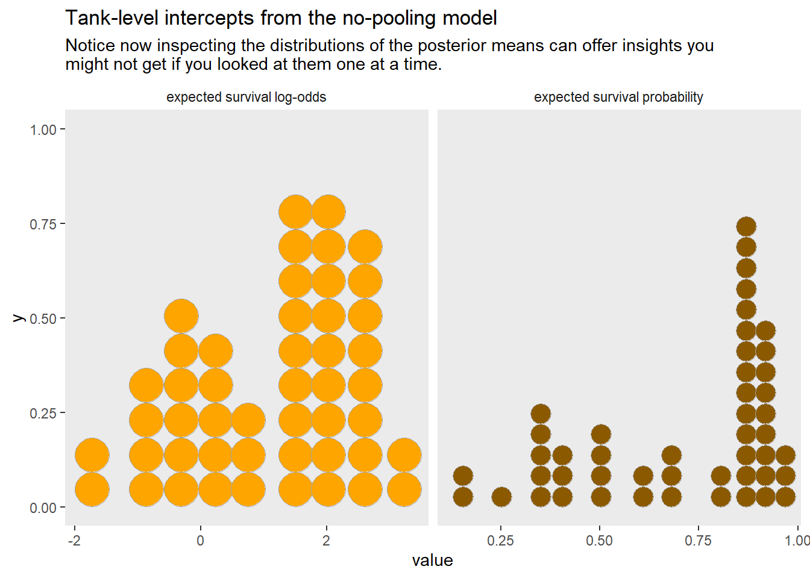
続いて、階層モデルを考える。
\[
\begin{aligned}
S_{i} &\sim Binomial(N_{i}, p_{i})\\
logit(p_{i}) &= \alpha_{tank[i]}\\
\alpha_{j} &\sim Normal(\bar{\alpha},\sigma) \\
\bar{\alpha} &\sim Normal(0,1.5)\\
\sigma &\sim Exponential(1)
\end{aligned}
\]
b13.2 <-
brm(data =d,
family = binomial,
formula = surv | trials(density) ~ 1 + (1|tank),
prior = c(prior(normal(0,1.5), class = Intercept),
prior(exponential(1), class = sd)),
iter = 5000, warmup =1000, sample_prior = "yes",
backend = "cmdstanr",
seed = 13, file = "output/Chapter13/b13.2")結果は以下の通り（表13.2）。
| param | Estimate | Est.Error | Q2.5 | Q97.5 |
|---|---|---|---|---|
| b_Intercept | 1.35 | 0.26 | 0.85 | 1.86 |
| sd_tank__Intercept | 1.62 | 0.22 | 1.25 | 2.10 |
| r_tank[1,Intercept] | 0.80 | 0.90 | -0.79 | 2.74 |
| r_tank[2,Intercept] | 1.74 | 1.12 | -0.16 | 4.19 |
| r_tank[3,Intercept] | -0.35 | 0.71 | -1.68 | 1.13 |
| r_tank[4,Intercept] | 1.73 | 1.12 | -0.18 | 4.26 |
| r_tank[5,Intercept] | 0.80 | 0.89 | -0.80 | 2.72 |
| r_tank[6,Intercept] | 0.80 | 0.90 | -0.79 | 2.75 |
| r_tank[7,Intercept] | 1.73 | 1.10 | -0.16 | 4.14 |
| r_tank[8,Intercept] | 0.79 | 0.89 | -0.78 | 2.68 |
モデルを比較してみる（表13.3）。b13.2の方が圧倒的に良いモデル。
## elpd_diff se_diff elpd_waic se_elpd_waic p_waic se_p_waic waic se_waic
## b13.2 0.0 0.0 -100.1 3.6 21.0 0.8 200.2 7.3
## b13.1 -6.9 1.9 -107.0 2.3 25.3 1.2 214.0 4.5| elpd_diff | se_diff | elpd_waic | se_elpd_waic | p_waic | se_p_waic | waic | se_waic | |
|---|---|---|---|---|---|---|---|---|
| b13.2 | 0.00 | 0.00 | -100.08 | 3.64 | 20.96 | 0.79 | 200.17 | 7.28 |
| b13.1 | -6.91 | 1.86 | -107.00 | 2.26 | 25.25 | 1.24 | 214.00 | 4.52 |
モデルの推定結果は、実データよりも事後分布の中央値に近づいている（= 縮合）。また、小さい水槽（= サンプルサイズが小さい）ではより縮合が起きている。これは、サンプルサイズが小さいほど結果に対する影響が小さいため。さらに、事後分布中央値から離れているデータほど縮合が起きている。 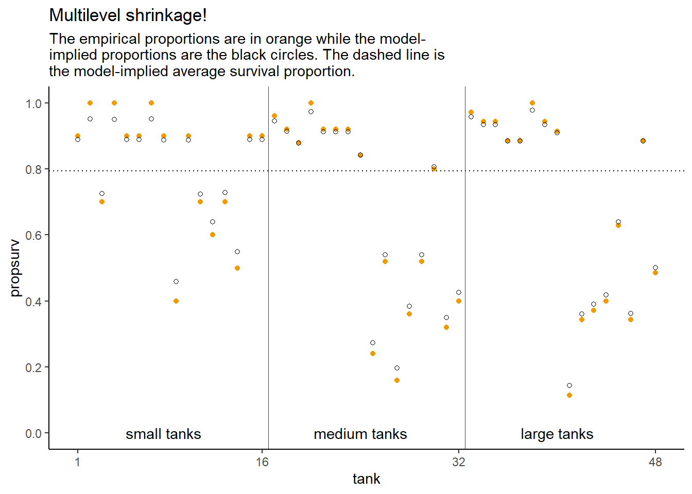
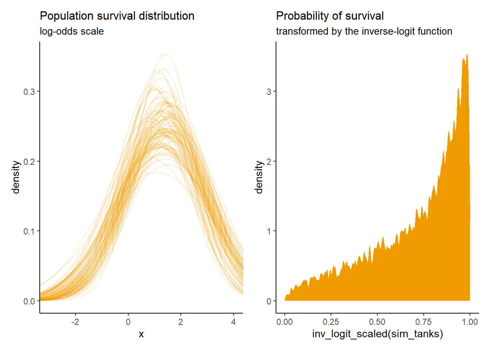
13.2 Varying effects and the underfitting/overfitting trade-off
先ほどのオタマジャクシの例で、もしすべてのデータをプールしたとすると、全体の平均はより正確に推定できるが、それぞれの水槽の平均にはあまり当てはまらない（underfitting）。一方、もしすべての水槽に異なる切片を推定するとすれば、それぞれの水槽の平均値を推定できるがデータ数が少ないので不正確になってしまう（overfitting）。階層モデルを用いれば、overfittingとunderfittingの両方を防ぐことができる。それぞれのクラスター内のデータ数が十分に多ければすべての水槽に異なる切片を推定するモデルの結果に近くなるが、少なければ縮合が起きてoverfittingを防いでくれる。
13.2.1 The model
b13.2のモデル式を用いてシミュレーションデータを作成する。
a_bar <- 1.5
sigma <- 1.5
n_ponds <- 60
set.seed(55)
dsim <-
tibble(pond = 1:n_ponds,
ni= rep(c(5,10,25,35),each=n_ponds/4) %>% as.integer(),
true_a = rnorm(n = n_ponds, mean = a_bar, sd = sigma))
head(dsim)## # A tibble: 6 × 3
## pond ni true_a
## <int> <int> <dbl>
## 1 1 5 1.68
## 2 2 5 -1.22
## 3 3 5 1.73
## 4 4 5 -0.179
## 5 5 5 1.50
## 6 6 5 3.2813.2.2 Simulate survivors
生存数をシミュレートする。
set.seed(5005)
dsim <-
dsim %>%
mutate(si = rbinom(n = n(), prob = inv_logit_scaled(true_a), size=ni),
p_nopool = si/ni)| pond | ni | true_a | si | p_nopool |
|---|---|---|---|---|
| 47 | 35 | 2.1398394 | 33 | 0.9428571 |
| 59 | 35 | -0.9496280 | 9 | 0.2571429 |
| 60 | 35 | 0.7680259 | 24 | 0.6857143 |
| 17 | 10 | 5.0330458 | 10 | 1.0000000 |
| 5 | 5 | 1.5028623 | 5 | 1.0000000 |
| 39 | 25 | 2.2360616 | 23 | 0.9200000 |
| 33 | 25 | 0.0979725 | 18 | 0.7200000 |
| 12 | 5 | 0.2351493 | 2 | 0.4000000 |
| 31 | 25 | 3.8471316 | 25 | 1.0000000 |
| 42 | 25 | 1.0700611 | 19 | 0.7600000 |
13.2.2.1 Computing the non-pooling estimates
それでは、実際にモデリングを行う。
b13.3 <-
brm(data = dsim,
family = binomial,
formula = si|trials(ni) ~ 1 + (1|pond),
prior = c(prior(normal(0, 1.5), class = Intercept),
prior(exponential(1), class = sd)),
iter = 5000, warmup =1000,
backend = "cmdstanr",
seed = 13, file = "output/Chapter13/b13.3")結果は以下の通り（表13.4）。
| Estimate | Est.Error | Q2.5 | Q97.5 | |
|---|---|---|---|---|
| b_Intercept | 1.31 | 0.20 | 0.93 | 1.71 |
| sd_pond__Intercept | 1.28 | 0.18 | 0.97 | 1.66 |
| r_pond[1,Intercept] | 0.99 | 1.00 | -0.80 | 3.13 |
| r_pond[2,Intercept] | -1.13 | 0.79 | -2.69 | 0.42 |
| r_pond[3,Intercept] | 0.14 | 0.86 | -1.45 | 1.95 |
| r_pond[4,Intercept] | -1.70 | 0.81 | -3.36 | -0.19 |
| r_pond[5,Intercept] | 0.98 | 0.99 | -0.79 | 3.07 |
| r_pond[6,Intercept] | 1.00 | 1.00 | -0.78 | 3.14 |
| r_pond[7,Intercept] | -0.52 | 0.81 | -2.05 | 1.11 |
| r_pond[8,Intercept] | -0.53 | 0.80 | -2.08 | 1.10 |
p_partpool <-
coef(b13.3)$pond[, , ] %>%
data.frame() %>%
transmute(p_partpool = inv_logit_scaled(Estimate))
dsim2 <-
dsim %>%
bind_cols(p_partpool) %>%
mutate(p_true = inv_logit_scaled(true_a)) %>%
mutate(nopool_error = abs(p_nopool - p_true),
partpool_error = abs(p_partpool - p_true))
slice_sample(dsim2 %>% dplyr::select(pond, p_partpool, p_true,
p_nopool, nopool_error,
partpool_error), n=10)## # A tibble: 10 × 6
## pond p_partpool p_true p_nopool nopool_error partpool_error
## <int> <dbl> <dbl> <dbl> <dbl> <dbl>
## 1 48 0.265 0.385 0.229 0.156 0.120
## 2 30 0.879 0.869 0.9 0.0309 0.0100
## 3 38 0.771 0.805 0.76 0.0451 0.0338
## 4 47 0.929 0.895 0.943 0.0481 0.0348
## 5 52 0.832 0.880 0.829 0.0512 0.0479
## 6 12 0.545 0.559 0.4 0.159 0.0139
## 7 53 0.509 0.489 0.486 0.00344 0.0203
## 8 42 0.772 0.745 0.76 0.0154 0.0270
## 9 33 0.736 0.524 0.72 0.196 0.211
## 10 18 0.880 0.959 0.9 0.0585 0.0789実際の値（青）も推定値（黒）も水槽内の個体数が多いほど真の確率に近づいている。また、推定値の方がほとんどの場合真の値に近くなっている。これは、縮合によってoverfittingが抑えられていることを示している。加えて、実際の値と推定値の違いは水槽内の個体数が多いほど小さくなっている。これは、サンプルサイズが小さいほど縮合が生じていることを示している。
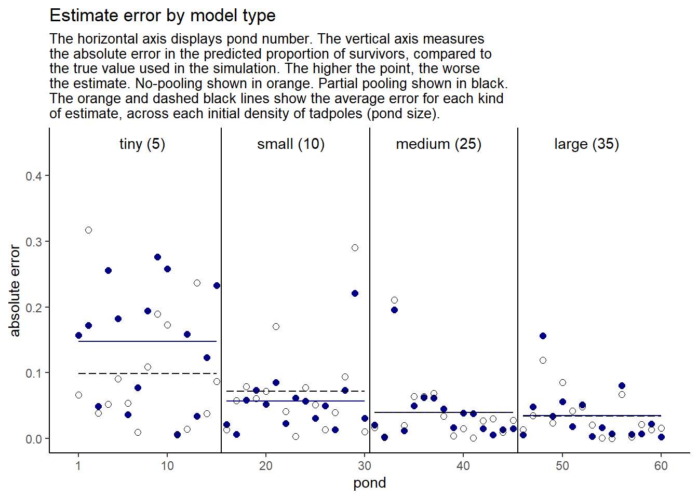
13.3 More than one type of cluster
Chapter11で用いたチンパンジーの実験データ(Silk et al. 2005)を用いて、2つ以上のクラスターのあるデータを扱う。データ内には対象個体（actor）と実験日（block）の2つのクラスターが存在する。
\[
\begin{aligned}
L_{i} &\sim Binomial(1,p_{i})\\
logit(p_{i}) &= \bar{\alpha} + \beta_{treatment[i]}+z_{actor[i]}\sigma_{\alpha} + x_{block[i]}\sigma_{\gamma}\\
\beta_{j} &\sim Normal(0,0.5)\\
\bar{\alpha}_{} &\sim Normal(0,1.5)\\
z_{j} &\sim Normal(0,1)\\
x_{j} &\sim Normal(0,1)\\
\sigma_{\alpha} &\sim Exponential(1)\\
\sigma_{\gamma} &\sim Exponential(1)\\
\end{aligned}
\]
data("chimpanzees")
d2 <- chimpanzees
d2 %>%
mutate(treatment = factor(1 + prosoc_left + 2*condition),
block = factor(block),
actor = factor(actor)) -> d2
head(d2)## actor recipient condition block trial prosoc_left chose_prosoc pulled_left
## 1 1 NA 0 1 2 0 1 0
## 2 1 NA 0 1 4 0 0 1
## 3 1 NA 0 1 6 1 0 0
## 4 1 NA 0 1 8 0 1 0
## 5 1 NA 0 1 10 1 1 1
## 6 1 NA 0 1 12 1 1 1
## treatment
## 1 1
## 2 1
## 3 2
## 4 1
## 5 2
## 6 2それでは、モデルを回す。
b13.4 <-
brm(data = d2,
family = bernoulli,
bf(pulled_left ~ a + b,
a ~ 1 + (1|actor) + (1|block),
b ~ 0 + treatment,
nl = TRUE),
prior = c(prior(normal(0, 0.5), nlpar = b),
prior(normal(0, 1.5), class = b,
coef = Intercept, nlpar = a),
prior(exponential(1), class = sd,
group = actor, nlpar = a),
prior(exponential(1), class = sd,
group = block, nlpar = a)),
backend = "cmdstanr",
seed = 13, file = "output/Chapter13/b13.4"
)収束のチェックをする。問題なさそう。
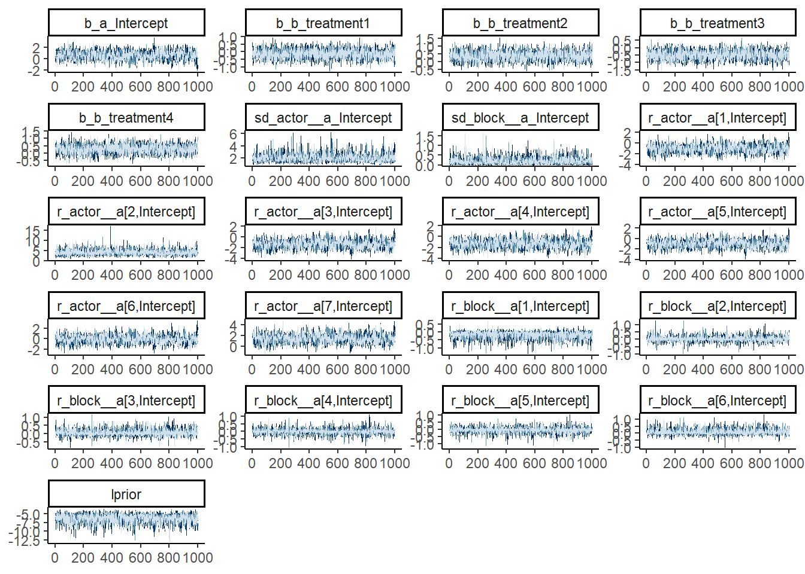
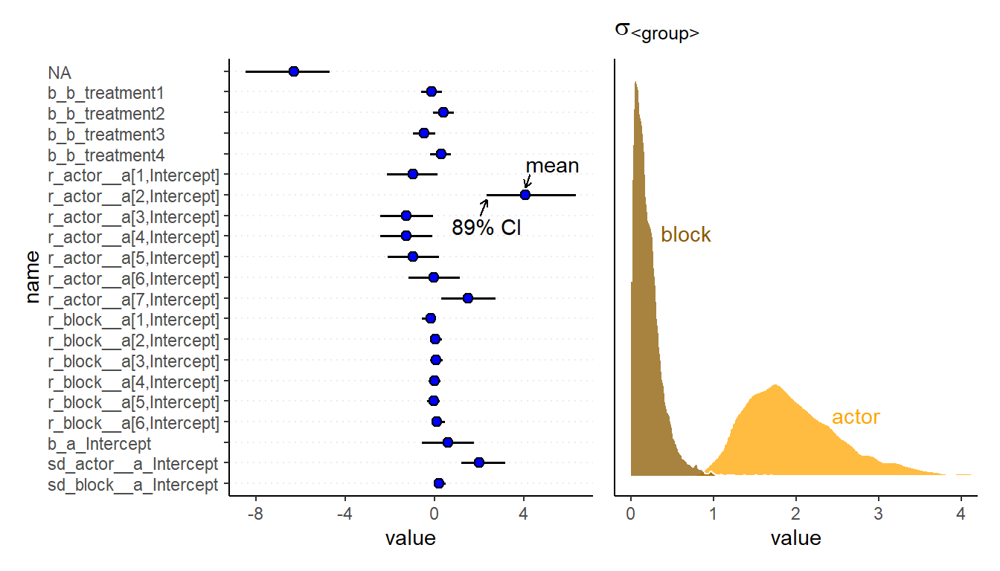
結果は以下の通り（表13.5）。
| Estimate | Est.Error | Q2.5 | Q97.5 | |
|---|---|---|---|---|
| b_a_Intercept | 0.60 | 0.73 | -0.85 | 2.01 |
| b_b_treatment1 | -0.13 | 0.30 | -0.71 | 0.46 |
| b_b_treatment2 | 0.40 | 0.30 | -0.17 | 0.98 |
| b_b_treatment3 | -0.47 | 0.31 | -1.07 | 0.13 |
| b_b_treatment4 | 0.29 | 0.29 | -0.30 | 0.86 |
| sd_actor__a_Intercept | 2.00 | 0.66 | 1.09 | 3.56 |
| sd_block__a_Intercept | 0.20 | 0.17 | 0.01 | 0.65 |
| r_actor__a[1,Intercept] | -0.96 | 0.72 | -2.40 | 0.48 |
| r_actor__a[2,Intercept] | 4.05 | 1.32 | 1.97 | 7.15 |
| r_actor__a[3,Intercept] | -1.26 | 0.73 | -2.73 | 0.22 |
blockの標準偏差は小さいため、これを除いても影響は小さいと考えられる。
b13.5 <-
brm(data = d2,
family = bernoulli,
bf(pulled_left ~ a + b,
a ~ 1 + (1|actor),
b ~ 0 + treatment,
nl = TRUE),
prior = c(prior(normal(0, 0.5), nlpar = b),
prior(normal(0, 1.5), class = b,
coef = Intercept, nlpar = a),
prior(exponential(1), class = sd,
group = actor, nlpar = a)),
backend = "cmdstanr",
seed = 13, file = "output/Chapter13/b13.5"
)モデル比較をすると、b13.5の方宇賀PSISが小さい（表@ref{tab:comp-b13-4}）。このことも、block間でそこまで大きなばらつきがないことを示している。
b13.4 <- add_criterion(b13.4, "loo")
b13.5 <- add_criterion(b13.5, "loo")
r <- loo_compare(b13.4, b13.5, criterion = "loo")
print(r, simplify = F) %>%
kable(digits = 2,
booktabs = TRUE,
caption = "b13.4とb13.5の比較。") %>%
kable_styling(latex_options = c("striped", "hold_position"))## elpd_diff se_diff elpd_loo se_elpd_loo p_loo se_p_loo looic se_looic
## b13.5 0.0 0.0 -265.7 9.6 8.7 0.4 531.4 19.2
## b13.4 -0.7 0.8 -266.4 9.7 10.8 0.6 532.8 19.4| elpd_diff | se_diff | elpd_loo | se_elpd_loo | p_loo | se_p_loo | looic | se_looic | |
|---|---|---|---|---|---|---|---|---|
| b13.5 | 0.0 | 0.00 | -265.71 | 9.61 | 8.66 | 0.44 | 531.41 | 19.21 |
| b13.4 | -0.7 | 0.79 | -266.41 | 9.68 | 10.83 | 0.55 | 532.82 | 19.37 |
13.3.1 Even more clusters
treatmentもランダム効果に入れることができる。
b13.6 <-
brm(data = d2,
family = bernoulli,
pulled_left ~ 1 + (1 | actor) + (1 | block) + (1 | treatment),
prior = c(prior(normal(0, 1.5), class = Intercept),
prior(exponential(1), class = sd)),
iter = 2000, warmup = 1000, chains = 4, cores = 4,
seed = 13,
backend = "cmdstanr",
file = "output/Chapter13/b13.6")固定効果と変量効果に入れた場合で、treatmentの推定値は大きく変わらない（表13.7）。これは、各条件で十分にデータ数があるためである。b13.6で少しだけ縮合が起きている。
| par | Est_fixed | se_fixed | Q2.5_fixed | Q97.5_fixed | Est_random | se_random | Q2.5_random | Q97.5_random |
|---|---|---|---|---|---|---|---|---|
| b_treatment1 | -0.1252342 | 0.2985188 | -0.7130660 | 0.4626933 | -0.1464338 | 0.4206498 | -0.9350493 | 0.5975902 |
| b_treatment2 | 0.4009403 | 0.2960419 | -0.1682906 | 0.9831511 | 0.3490351 | 0.4238662 | -0.3693319 | 1.1606370 |
| b_treatment3 | -0.4709128 | 0.3066623 | -1.0746720 | 0.1270108 | -0.4695689 | 0.4373799 | -1.3439747 | 0.2151697 |
| b_treatment4 | 0.2863133 | 0.2936503 | -0.3017152 | 0.8585155 | 0.2414440 | 0.4149398 | -0.4727484 | 1.0509438 |
13.4 Divergent transitions and non-centered priors
事後分布の傾きに急な部分があるとき、divergent transitionが生じることがある。これは、階層モデルを扱うときによく生じる。これに対処する方法は大きく分けて2つある。
- warmup期間でうまく調節が行われるようにする（i.e.,
adapt_deltaの値を上げる）。
- 最パラメータ化を行う。
13.4.1 The Devil’s Funnel
以下のモデルを考える。
\[ \begin{aligned} v &\sim Normal(0,3)\\ x &\sim Normal(0, exp(v))\\ \end{aligned} \]
モデルを回してみると、非常に多くのdivergent transitionが生じる。
#m13.7 <-
# ulam(
# data = list(N = 1),
# alist(
# v ~ normal(0, 3),
# x ~ normal(0, exp(v))
#),
#chains = 4
#)
m13.7 <- readRDS("output/Chapter13/m13.7.rds")
precis(m13.7)## mean sd 5.5% 94.5% n_eff Rhat4
## v 2.318110 2.189705 -1.950641 5.800031 6.859522 1.429809
## x 8.048351 122.682505 -77.021070 158.026145 71.127011 1.032196xの分布は以下のようになる。かなり急であることが分かる。
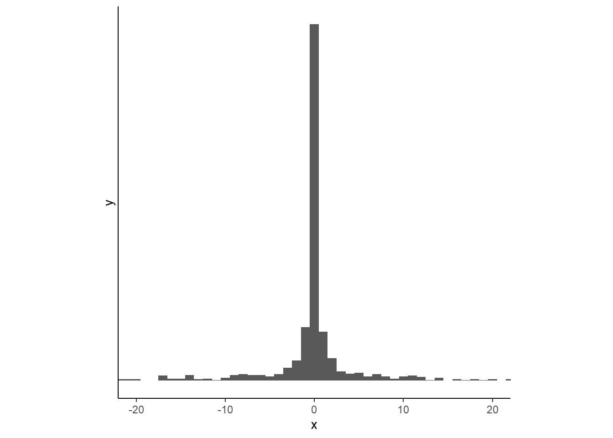
traceplotもうまく収束していないことを示している。
この例はNealの漏斗と呼ばれる。対数事後確率\(p(v,x) = p(x|v)*p(v)\)を計算し、その上にMCMCサンプルも図示する。対数事後確率の高いところからうまくサンプリングできていないことが分かる。これは、zが小さいところではxの事後分布が0付近でかなり急になっているからである。
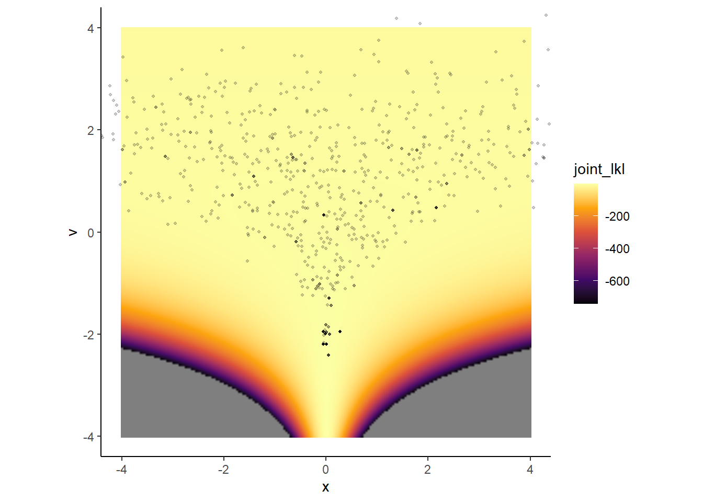
これを解決するために、non-centered parametarazationという最パラメータ化を行う。この方法は、あるパラメータの分布が別のパラメータに強く依存しないようにすることである。non-centered parametarazationでは、標準化と逆のことを行っている。すなわち、下の式では\(z\)が\(x\)を標準化したものになるようにしている。
\[
\begin{aligned}
v &\sim Normal(0,3)\\
z &\sim Normal(0,1)\\
x &= z\:exp(v)
\end{aligned}
\]
最パラメータ後はvとzについて事後分布を得ることになるが、このとき対数事後分布に傾きが急な場所ができないため、うまくサンプリングができる。
#m13.7nc <- ulam(
#alist(
#v ~ normal(0,3),
#z ~ normal(0,1),
#gq> real[1]:x<<- z*exp(v)
#),
#data = list(N=1), chains=4
#)
m13.7nc <- readRDS(file="output/Chapter13/m13.7nc")
precis(m13.7nc)## mean sd 5.5% 94.5% n_eff Rhat4
## v 0.04191068 3.1933725 -5.076669 5.278982 1329.498 1.0002242
## z 0.02140103 0.9948099 -1.582802 1.623487 1269.240 0.9991946
## x -27.78654239 2164.0742844 -28.304278 42.382686 1479.803 1.0000306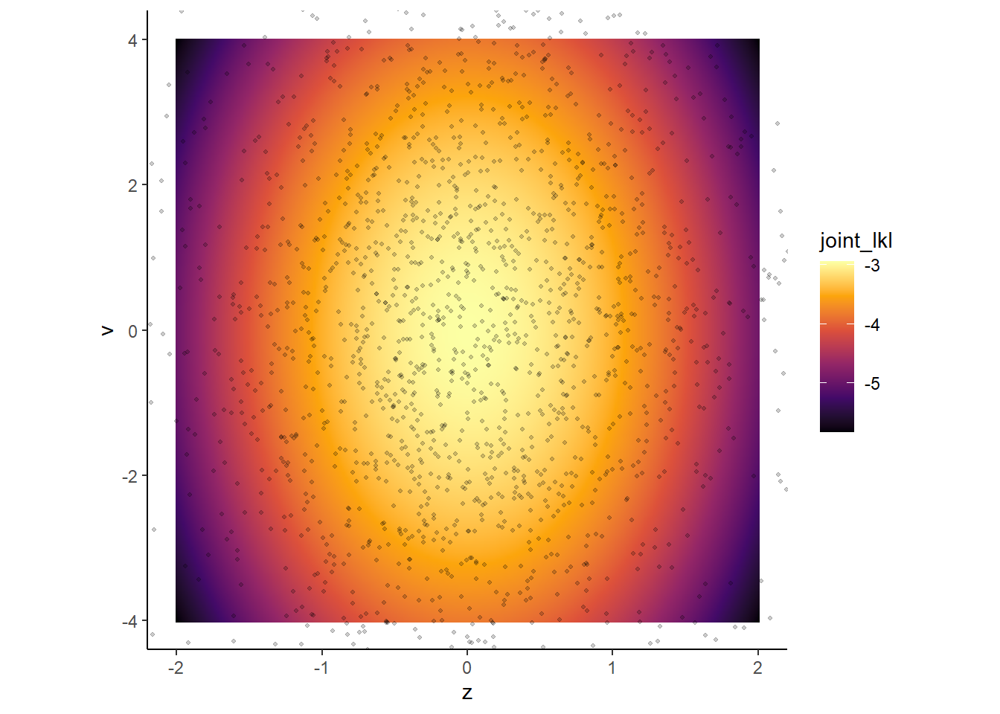
13.5 Multilevel posterior predictions
13.5.1 Posterior prediction for same clusters
chimpの個体2の事後予測を描写する。
nd <- d2 %>%
distinct(treatment) %>%
mutate(actor=2, block=1)
labels <- c("R/N", "L/N", "R/P", "L,P")
fit13.4 <- fitted(b13.4, newdata = nd) %>%
data.frame() %>%
bind_cols(nd) %>%
mutate(treatment = factor(treatment, labels = labels))個体2の推定値は以下の通り（表13.8）。
fit13.4 %>%
kable(booktabs = TRUE,
caption = "個体2の推定値") %>%
kable_styling(latex_options = c("striped","hold_position"))| Estimate | Est.Error | Q2.5 | Q97.5 | treatment | actor | block |
|---|---|---|---|---|---|---|
| 0.9786448 | 0.0203763 | 0.9243916 | 0.9993467 | R/N | 2 | 1 |
| 0.9871279 | 0.0128489 | 0.9521603 | 0.9995752 | L/N | 2 | 1 |
| 0.9705514 | 0.0274387 | 0.8965248 | 0.9990162 | R/P | 2 | 1 |
| 0.9856228 | 0.0140419 | 0.9469928 | 0.9995442 | L,P | 2 | 1 |
描写すると以下のようになる。
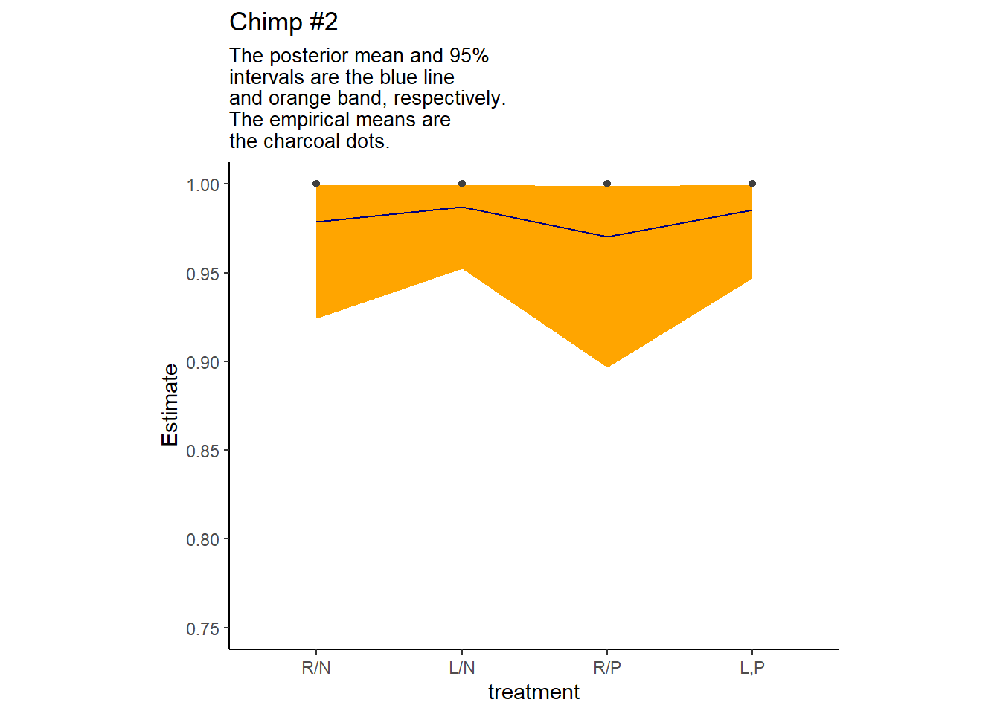
続いて個体5について、fitted()を用いずに事後分布を描く。
post <- posterior_samples(b13.4)
post %>%
transmute(actor_5 = `r_actor__a[5,Intercept]`) %>%
ggplot(aes(x=actor_5))+
geom_density(size=0, fill="orange1", color = "transparent")+
theme(aspect.ratio=0.8)+
ggtitle("Chimp #5's density")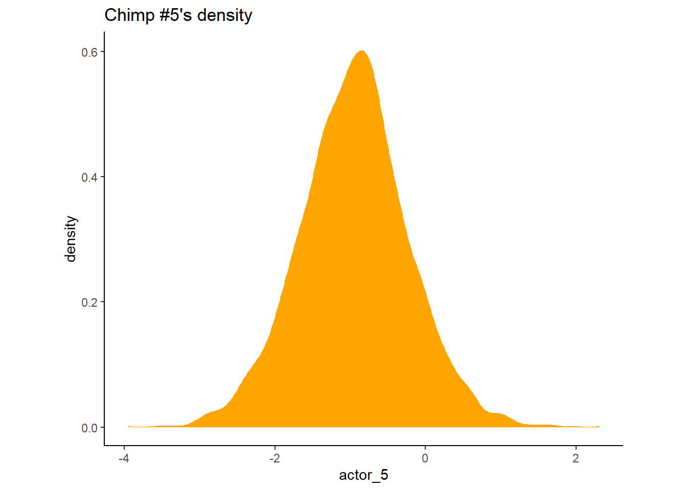
個体5の推定値は以下の通り（表13.9）。
post %>%
pivot_longer(b_b_treatment1:b_b_treatment4) %>%
mutate(fitted = inv_logit_scaled(b_a_Intercept + value + `r_actor__a[1,Intercept]` + `r_block__a[1,Intercept]`)) %>%
mutate(treatment = factor(str_remove(name, "b_b_treatment"),
labels = labels)) %>%
dplyr::select(name:treatment) %>%
group_by(treatment) %>%
mean_qi(fitted) -> fit13.4_act5| treatment | fitted | .lower | .upper | .width | .point | .interval |
|---|---|---|---|---|---|---|
| R/N | 0.35 | 0.20 | 0.51 | 0.95 | mean | qi |
| L/N | 0.47 | 0.29 | 0.63 | 0.95 | mean | qi |
| R/P | 0.28 | 0.15 | 0.42 | 0.95 | mean | qi |
| L,P | 0.44 | 0.27 | 0.61 | 0.95 | mean | qi |
図示すると以下の通り。 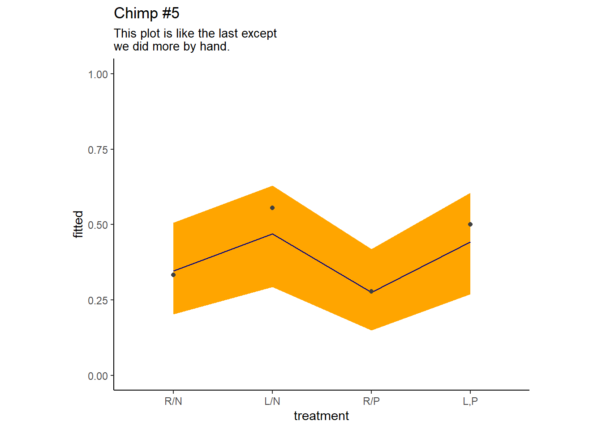
13.5.2 Posterior prediction for new clusters
現在の推定結果から新たなclusterについて予測をしたい。まず、平均的な個体（つまり、ランダム効果を0にしたとき）の推定値と80%信用区間は以下の通り（表13.10）。
fit13.4_new_ave <-
post %>%
pivot_longer(b_b_treatment1:b_b_treatment4) %>%
mutate(fitted = inv_logit_scaled(b_a_Intercept + value)) %>%
mutate(treatment = factor(str_remove(name, "b_b_treatment"),
labels = labels)) %>%
dplyr::select(name:treatment) %>%
group_by(treatment) %>%
mean_qi(fitted, .width = .8)fit13.4_new_ave %>%
kable(booktabs = TRUE,
digits=2,
caption = "平均的な個体") %>%
kable_styling(latex_options = c("striped","hold_position"))| treatment | fitted | .lower | .upper | .width | .point | .interval |
|---|---|---|---|---|---|---|
| R/N | 0.60 | 0.40 | 0.80 | 0.8 | mean | qi |
| L/N | 0.71 | 0.52 | 0.87 | 0.8 | mean | qi |
| R/P | 0.53 | 0.32 | 0.73 | 0.8 | mean | qi |
| L,P | 0.69 | 0.49 | 0.86 | 0.8 | mean | qi |
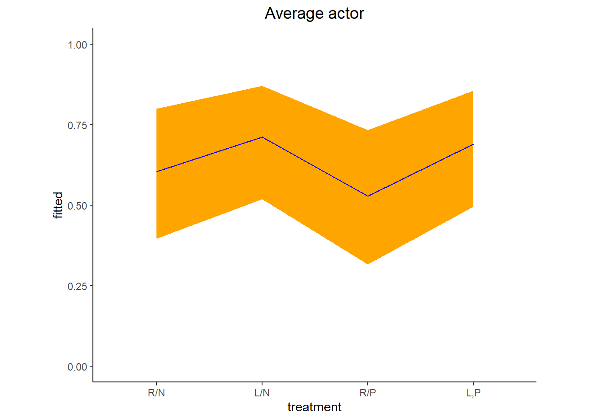
続いて、シミュレーションを行ってランダム効果を考慮に入れた（個体間のばらつきを考慮に入れた）推定値と80%信用区間を図示すると、以下のようになる（表@ref(tab:res-b13.4-qi-sim)）。
fit13.4_new_sim <-
post %>%
mutate(a_sim = rnorm(n(),mean=b_a_Intercept, sd = sd_actor__a_Intercept)) %>%
pivot_longer(b_b_treatment1:b_b_treatment4) %>%
mutate(fitted = inv_logit_scaled(a_sim + value)) %>%
mutate(treatment = factor(str_remove(name, "b_b_treatment"),
labels = labels)) %>%
dplyr::select(name:treatment) %>%
group_by(treatment) %>%
mean_qi(fitted, .width = .8)| treatment | fitted | .lower | .upper | .width | .point | .interval |
|---|---|---|---|---|---|---|
| R/N | 0.57 | 0.10 | 0.96 | 0.8 | mean | qi |
| L/N | 0.64 | 0.15 | 0.98 | 0.8 | mean | qi |
| R/P | 0.52 | 0.07 | 0.94 | 0.8 | mean | qi |
| L,P | 0.63 | 0.14 | 0.97 | 0.8 | mean | qi |
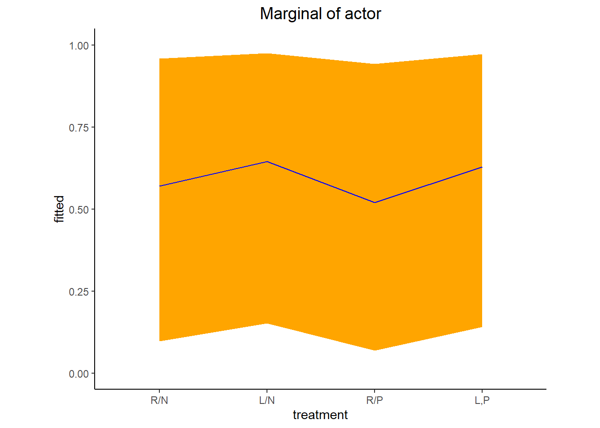
最後に、新たに100個体についてデータを取得した際の推定値をシミュレートする。
nd <- distinct(d2, treatment) %>%
tidyr::expand(actor = str_c("new",1:100),
treatment) %>%
mutate(row = 1:n())
set.seed(13)
fit13.4_new_100 <-
fitted(b13.4,
newdata=nd,
allow_new_levels =TRUE,
sample_new_levels = "gaussian",
summary =F,
nsamples=100) %>%
data.frame()p7 <- fit13.4_new_100 %>%
set_names(pull(nd,row)) %>%
mutate(iter = 1:n()) %>%
pivot_longer(-iter,names_to="row") %>%
mutate(row=as.double(row)) %>%
left_join(nd, by="row") %>%
mutate(actor_n = str_remove(actor, "new") %>% as.double()) %>%
filter(actor_n == iter) %>%
mutate(treatment = factor(treatment, labels = labels)) %>%
ggplot(aes(x = treatment, y = value, group = actor)) +
geom_line(alpha = 1/2, color = "navy") +
ggtitle("100 simulated actors") +
theme(plot.title = element_text(size = 14, hjust = .5),
aspect.ratio = 0.8)
p5|p6|p7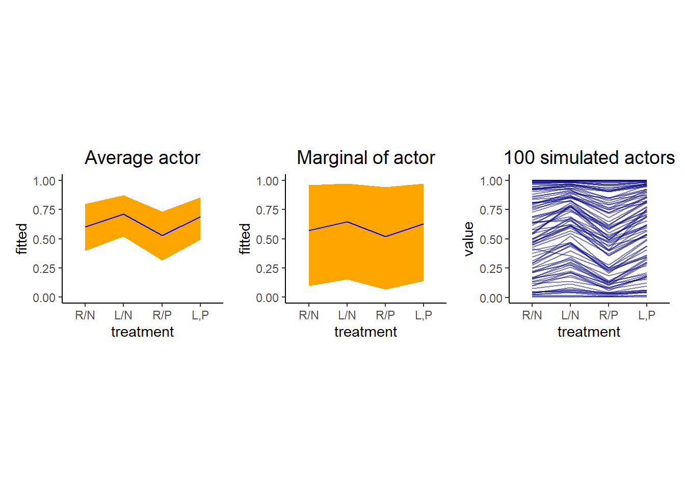
13.6 Post stratification
新たなクラスターに関する予測をする他の方法としては、post stratificationがある。例えば、それぞれのカテゴリー\(i\)について推定値\(p_{i}\)が推定されたとき、それぞれのカテゴリーのデータ数に基づいて算出した以下の式を用いる。
\[ \frac{\sum_{i} N_{i}p_{i}}{\sum_{i} N_{i}} \]
13.6.1 Meet the data
以下では、Monica Alexanderのブログの例を用いる。
load("data/mrp_data_ch13.rds")
d %>%
head(10) %>%
kable(booktabs = TRUE) %>%
kable_styling(latex_options = c("striped","hold_position"))| kept_name | state_name | age_group | decade_married | educ_group |
|---|---|---|---|---|
| 0 | ohio | 50 | 1979 | >BA |
| 0 | virginia | 35 | 1999 | >BA |
| 1 | new york | 35 | 2009 | >BA |
| 0 | rhode island | 55 | 1999 | >BA |
| 0 | illinois | 35 | 2009 | >BA |
| 0 | north carolina | 25 | 2009 | >BA |
| 1 | iowa | 35 | 1999 | >BA |
| 1 | texas | 35 | 2009 | >BA |
| 0 | south dakota | 35 | 1999 | >BA |
| 0 | texas | 35 | 2009 | >BA |
データdは、女性が結婚後に姓を変更したかについてのデータ。変数の説明は以下の通り。
- kept_name 回答、1 = “yes”, 0 = “no”。
- age_group 25歳から75歳まで、25 = [25,30), 30 = [30,40)…。
- decade_married 1979年から2019年まで、1979 = [1979,1989), 1989 =[1989,1999), …。
- educ_group <BA = no bachelor’s degree, BA = bachelor’s degree, >BA = above bachelor’s degree。
- state_name 州の名前。
データcell_countsはUS censusによるデータで、nは各カテゴリーに該当する人数を表している。一部のカテゴリーについては十分なサンプル数があるが、それ以外についてはサンプル数が小さいものもあり、ばらつきが大きい。よって、新たなかてごりーについて予測を行う場合には、 個のばらつきを考慮する必要がある。
cell_counts %>%
ggplot(aes(x = n)) +
geom_histogram(binwidth = 2000, fill = "blue") +
scale_x_continuous(breaks = 0:3 * 100000, labels = c(0, "100K", "200K", "300K"))+
theme(aspect.ratio=1)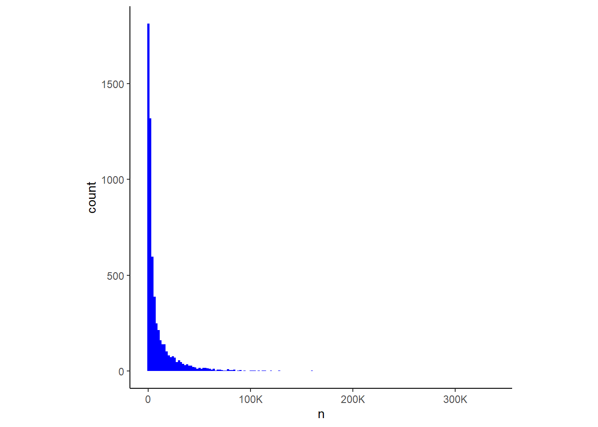
13.6.2 Settle the MR part of MRP.
まずは、データを用いてモデリングを行う。全体の平均の事前分布としては、\(Normal(-1,1)\)を用いる。これは、結婚後には姓を変えると答える人の方が多いと考えられるため。
tibble(n = rnorm(1e6, -1, 1)) %>%
mutate(p = inv_logit_scaled(n)) %>%
ggplot(aes(x = p)) +
geom_histogram(fill = "blue", binwidth = .02) +
scale_y_continuous(breaks = NULL)+
theme(aspect.ratio=0.7)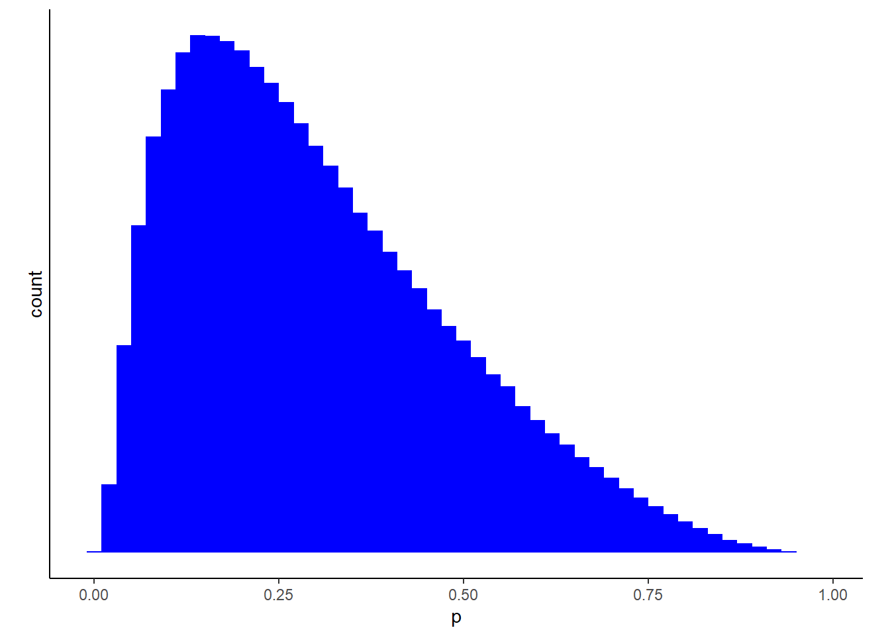
それでは、モデリングを行う。
b13.7 <-
brm(data =d,
family = bernoulli,
formula = kept_name ~ 1 + (1|age_group) +
(1|decade_married) + (1|educ_group) + (1|state_name),
prior = c(prior(normal(-1, 1), class = Intercept),
prior(exponential(1), class = sd)),
seed = 13, control = list(adapt_delta =.98),
backend = "cmdstanr",
file = "output/Chapter13/b13.7")| par | Estimate | Est.Error | Q2.5 | Q97.5 |
|---|---|---|---|---|
| b_Intercept | -0.72 | 0.62 | -1.97 | 0.50 |
| sd_age_group__Intercept | 1.16 | 0.29 | 0.73 | 1.86 |
| sd_decade_married__Intercept | 1.01 | 0.40 | 0.50 | 2.05 |
| sd_educ_group__Intercept | 0.92 | 0.48 | 0.35 | 2.22 |
| sd_state_name__Intercept | 0.25 | 0.06 | 0.14 | 0.38 |
推定値の90%信用区間は以下の通り。
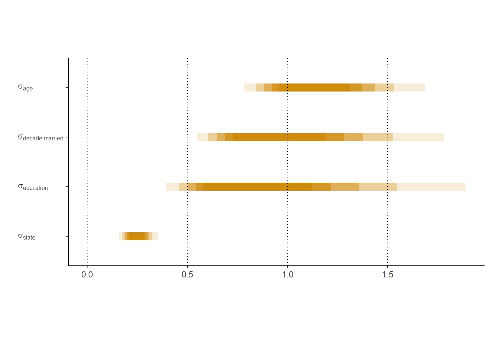
13.6.3 Post-stratify to put the P in MRP.
ここでは、age_groupとstateのみに焦点を当てる。以下では、3つの推定方法による結果を比較する。
13.6.3.1 Estimate by age group
まずは、生データの姓を変更した女性の割合を年齢層ごとに図示する。 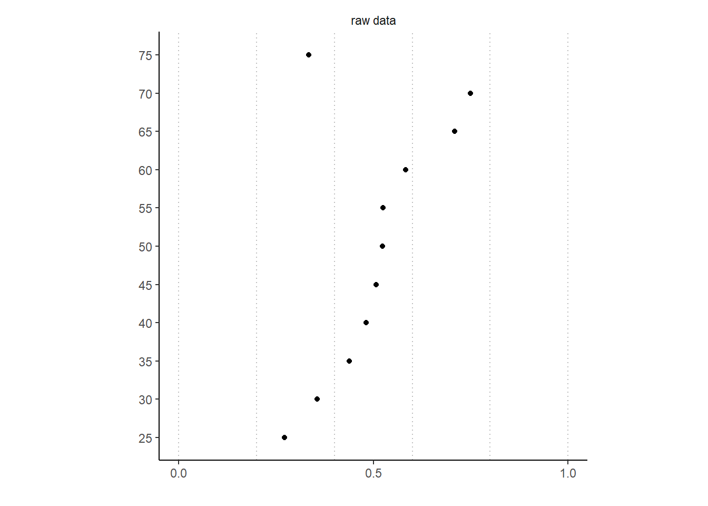
続いて、階層モデルの推定結果を図示する。
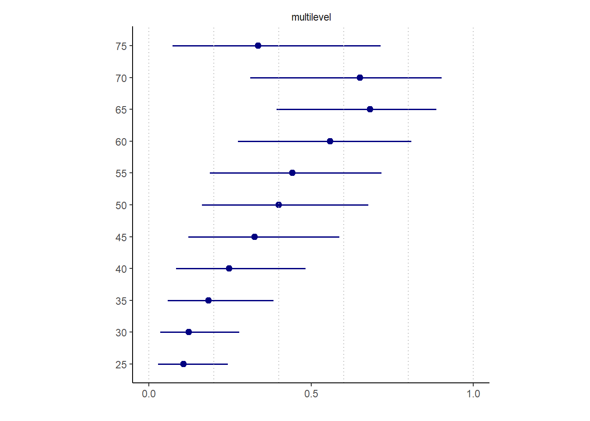
最後に、post-stratificationによる推定結果を図示する。
まずは、cell_countsデータの各年齢カテゴリーの全体に占める割合を算出し、モデルの結果をもとにそれぞれのカテゴリーにおける事後予測分布を算出する。
age_prop <-
cell_counts %>%
group_by(age_group) %>%
mutate(prop = n/sum(n)) %>%
ungroup()
p <- add_predicted_draws(b13.7,
newdata = age_prop %>%
filter(between(age_group,20,80),
decade_married >1969),
allow_new_levels = TRUE)この結果を用い、以下の数式に基づき各カテゴリのデータ数に応じて重みづけを行う。
\[
\frac{\sum_{i} N_{i}p_{i}}{\sum_{i} N_{i}}
\]
p <-
p %>%
group_by(age_group, .draw) %>%
summarise(kept_name_predict = sum(.prediction*prop)) %>%
group_by(age_group) %>%
mean_qi(kept_name_predict)全ての結果を図示すると以下の通り。 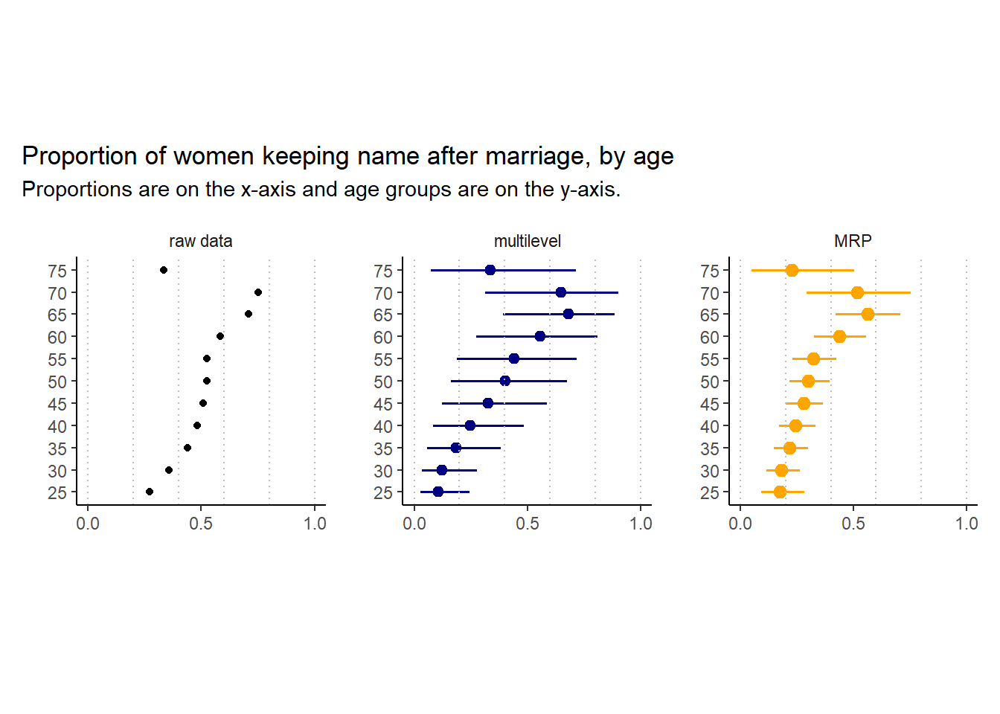
13.6.3.2 Estimate by US state.
続いて、州ごとの予測結果を図示する。 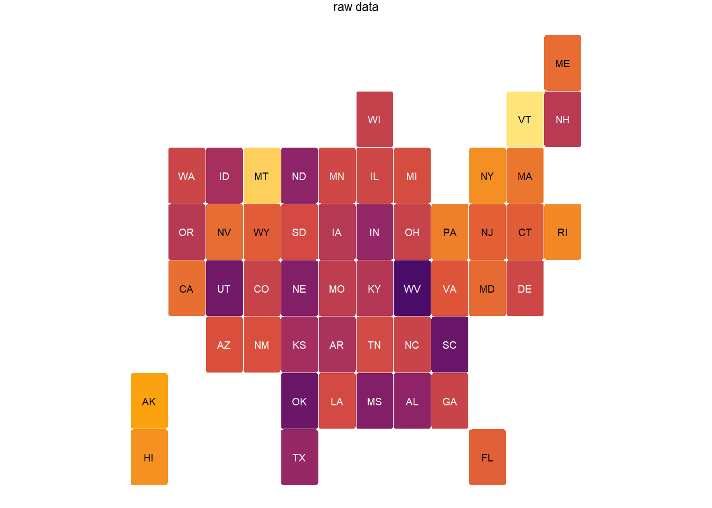
続いて、階層レベルモデルの結果を図示する。
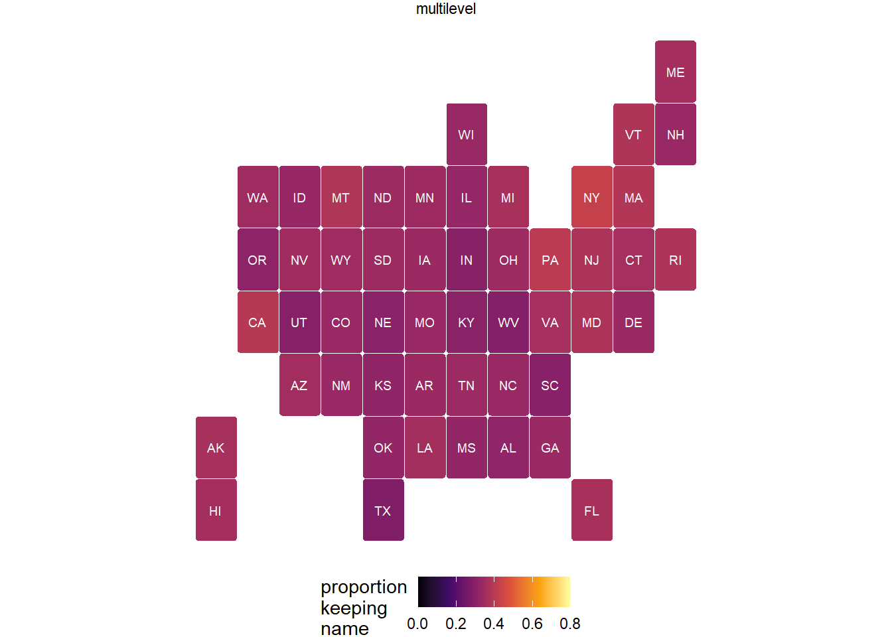
最後に、post-stratificationによる推定結果を図示する。
state_prop <-
cell_counts %>%
group_by(state_name) %>%
mutate(prop=n/sum(n))
add_predicted_draws(b13.7,
newdata = state_prop %>%
filter(between(age_group,20,80),
decade_married > 1969),
allow_new_levels = TRUE) %>%
group_by(state_name, .draw) %>%
summarise(kept_name_predict = sum(.prediction*prop)) %>%
group_by(state_name) %>%
mean_qi(kept_name_predict) -> pp全部を図示すると以下の通り。
\(\sigma_{state}\)の推定値は小さかったので、縮合によってモデルによる推定値のばらつきが小さくなっていることが分かる。
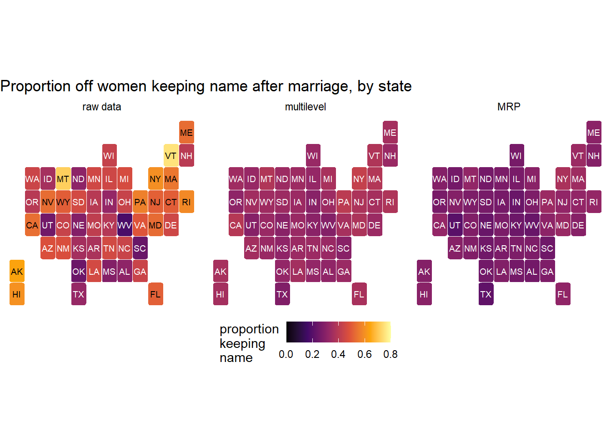
13.7 Practice
13.7.1 13M1
Revisit the Reed frog survival data,
data(reedfrogs), and add the predation and size treatment variables to the varying intercepts model. Consider models with either main effect alone, both main effects, as well as a model including both and their interaction. Instead of focusing on inferences about these two predictor variables, focus on the inferred variation across tanks. Explain why it changes as it does across models.
reedfrogsデータで、pred（捕食者がいたか）とsize（オタマジャクシの大きさ(big or small)）も説明変数に加える。どちらか一方を加えたモデル、両方を加えたモデル、交互作用も含めたモデルの計4つのモデルを比較する。
data(reedfrogs)
d <- reedfrogs
head(d)## density pred size surv propsurv
## 1 10 no big 9 0.9
## 2 10 no big 10 1.0
## 3 10 no big 7 0.7
## 4 10 no big 10 1.0
## 5 10 no small 9 0.9
## 6 10 no small 9 0.9d %>%
mutate(tank = 1:nrow(d)) ->d
head(d)## density pred size surv propsurv tank
## 1 10 no big 9 0.9 1
## 2 10 no big 10 1.0 2
## 3 10 no big 7 0.7 3
## 4 10 no big 10 1.0 4
## 5 10 no small 9 0.9 5
## 6 10 no small 9 0.9 6d %>%
mutate(pred = ifelse(pred == "pred",1,0),
size = ifelse(size == "big", 1,0)) ->dd
b13M1a <-
brm(data =dd,
family = binomial,
formula = bf(surv|trials(density) ~ a + b,
a ~ 1 + (1|tank),
b ~ 0 + pred,
nl = TRUE),
prior = c(prior(normal(0,1.5), class = b,
coef = Intercept, nlpar =a),
prior(normal(0,1.5), class = b, nlpar =b),
prior(exponential(1), class = sd, nlpar =a)),
backend = "cmdstanr",
seed = 15, file = "output/Chapter13/b13M1a"
)
b13M1b <-
brm(data =dd,
family = binomial,
formula = bf(surv|trials(density) ~ a + b,
a ~ 1 + (1|tank),
b ~ 0 + size,
nl = TRUE),
prior = c(prior(normal(0,1.5), class = b,
coef = Intercept, nlpar =a),
prior(normal(0,1.5), class = b, nlpar =b),
prior(exponential(1), class = sd, nlpar =a)),
backend = "cmdstanr",
seed = 15, file = "output/Chapter13/b13M1b"
)
b13M1c <-
brm(data =dd,
family = binomial,
formula = bf(surv|trials(density) ~ a + b,
a ~ 1 + (1|tank),
b ~ 0 + pred + size,
nl = TRUE),
prior = c(prior(normal(0,1.5), class = b,
coef = Intercept, nlpar =a),
prior(normal(0,1.5), class = b, nlpar =b),
prior(exponential(1), class = sd, nlpar =a)),
backend = "cmdstanr",
seed = 15, file = "output/Chapter13/b13M1c"
)
b13M1d <-
brm(data =dd,
family = binomial,
formula = bf(surv|trials(density) ~ a + b,
a ~ 1 + (1|tank),
b ~ 0 + pred*size,
nl = TRUE),
prior = c(prior(normal(0,1.5), class = b,
coef = Intercept, nlpar =a),
prior(normal(0,1.5), class = b, nlpar =b),
prior(exponential(1), class = sd, nlpar =a)),
backend = "cmdstanr",
seed = 15, file = "output/Chapter13/b13M1d"
)posterior_summary(b13M1a) %>%
data.frame() %>%
rownames_to_column(var = "par") %>%
filter(str_detect(par, "b_|sd_")) %>%
set_names(c("par","Est_a","SE_a","Q2.5_a","Q97.5_a"))-> res_13M1a
posterior_summary(b13M1b) %>%
data.frame() %>%
rownames_to_column(var = "par") %>%
filter(str_detect(par, "b_|sd_")) %>%
set_names(c("par","Est_b","SE_b","Q2.5_b","Q97.5_b"))-> res_13M1b
posterior_summary(b13M1c) %>%
data.frame() %>%
rownames_to_column(var = "par") %>%
filter(str_detect(par, "b_|sd_"))%>%
set_names(c("par","Est_c","SE_c","Q2.5_c","Q97.5_c")) -> res_13M1c
posterior_summary(b13M1d) %>%
data.frame() %>%
rownames_to_column(var = "par") %>%
filter(str_detect(par, "b_|sd_"))%>%
set_names(c("par","Est_d","SE_d","Q2.5_d","Q97.5_d")) -> res_13M1d
res_13M1a %>%
full_join(res_13M1b,by="par") %>%
full_join(res_13M1c) %>%
full_join(res_13M1d) %>%
mutate(across(where(is.numeric),~round(.x,2)))-> res_13M1
res_13M1[is.na(res_13M1)] <- "-"predが入っているモデルではほとんど変わらないが、sizeだけのモデルでは大きくなっている。これは、predがタンクごとの違いの大部分を説明しているからだと考えられる。| par | Estimate | SE | Q2.5 | Q97.5 | Estimate | SE | Q2.5 | Q97.5 | Estimate | SE | Q2.5 | Q97.5 | Estimate | SE | Q2.5 | Q97.5 |
|---|---|---|---|---|---|---|---|---|---|---|---|---|---|---|---|---|
| b_a_Intercept | 2.57 | 0.25 | 2.09 | 3.08 | 1.52 | 0.34 | 0.84 | 2.2 | 2.8 | 0.27 | 2.26 | 3.34 | 2.48 | 0.29 | 1.92 | 3.08 |
| b_b_pred | -2.5 | 0.31 | -3.12 | -1.88 |
|
|
|
|
-2.51 | 0.3 | -3.13 | -1.92 | -1.99 | 0.37 | -2.70 | -1.28 |
| sd_tank__a_Intercept | 0.82 | 0.15 | 0.57 | 1.14 | 1.62 | 0.22 | 1.24 | 2.1 | 0.78 | 0.15 | 0.53 | 1.1 | 0.74 | 0.14 | 0.49 | 1.05 |
| b_b_size |
|
|
|
|
-0.35 | 0.49 | -1.31 | 0.63 | -0.46 | 0.29 | -1.01 | 0.15 | 0.22 | 0.42 | -0.58 | 1.07 |
| b_b_pred:size |
|
|
|
|
|
|
|
|
|
|
|
|
-1.13 | 0.52 | -2.16 | -0.13 |
13.7.2 13M2
Compare the models you fit just above, using WAIC. Can you reconcile the differences in WAIC with the posterior distributions of the models?
WAICを比較する（表@ref{tab:comp-waic}）。ほとんど変わらないが、やはりpredのみのモデルが最も予測がよい。
b13M1a <- add_criterion(b13M1a, "waic")
b13M1b <- add_criterion(b13M1b, "waic")
b13M1c <- add_criterion(b13M1c, "waic")
b13M1d <- add_criterion(b13M1d, "waic")loo_compare(b13M1a,b13M1b,b13M1c,b13M1d, criterion="waic") %>%
print(simplify = F) %>%
kable(digits = 2,
booktabs = TRUE,
caption = "WAICの比較。") %>%
kable_styling(latex_options = c("striped", "hold_position"))## elpd_diff se_diff elpd_waic se_elpd_waic p_waic se_p_waic waic se_waic
## b13M1a 0.0 0.0 -99.3 4.6 19.0 2.0 198.6 9.1
## b13M1c -0.7 1.0 -100.0 4.4 19.1 1.9 199.9 8.8
## b13M1b -0.9 2.9 -100.2 3.6 21.0 0.9 200.4 7.3
## b13M1d -1.0 1.7 -100.2 4.8 19.3 2.2 200.5 9.6| elpd_diff | se_diff | elpd_waic | se_elpd_waic | p_waic | se_p_waic | waic | se_waic | |
|---|---|---|---|---|---|---|---|---|
| b13M1a | 0.00 | 0.00 | -99.28 | 4.55 | 19.03 | 1.96 | 198.55 | 9.11 |
| b13M1c | -0.69 | 0.96 | -99.96 | 4.41 | 19.12 | 1.89 | 199.92 | 8.83 |
| b13M1b | -0.94 | 2.89 | -100.22 | 3.63 | 21.02 | 0.86 | 200.43 | 7.27 |
| b13M1d | -0.97 | 1.68 | -100.24 | 4.82 | 19.34 | 2.15 | 200.49 | 9.65 |
13.7.3 13M3
$$ \[\begin{aligned} s_i &\sim Binomial(n_i,p_i)\\ logit(p_i) &= \alpha_{tank}\\ \alpha_{tank} &\sim Cauchy(\alpha,\sigma)\\ \alpha &\sim Normal(0,1)\\ \sigma &\sim Exponential(1) \end{aligned}\]Re-estimate the basic Reed frog varying intercept model, but now using a Cauchy distribution in place of the Gaussian distribution for the varying intercepts. That is, fit this model:
$$
Compare the posterior means of the intercepts, , to the posterior means produced in the chapter, using the customary Gaussian prior. Can you explain the pattern of differences?
ランダム効果の標準偏差にコーシー分布を用いてモデリングを行う。
brmsだと実装できないので、ulam関数でモデリングする。
#b13M3 <-
# m_TankCauchy <- ulam(
#alist(
# surv ~ dbinom(density, p),
#logit(p) <- a[tank],
#a[tank] ~ dcauchy(a_bar, sigma),
#a_bar ~ dnorm(0, 1.5),
#sigma ~ dexp(1)
#),
#data = d, chains = 4, cores = 4, log_lik = TRUE,
#iter = 2e3, control = list(adapt_delta = 0.99)
#)
b13M3 <- readRDS("output/Chapter13/b13M3.rds")各tankのランダム切片の推定値を示すと以下のようになる(表13.1)。白抜きの点は実測値、オレンジの点はコーシー分布を事前分布としたときの推定値、青い点は正規分布を事前分布としたときの推定値を示す。また、点線は実測値の平均値である。
正規分布のほうがコーシー分布よりも点線に近い推定値をとっており、縮合がより強く生じていることがわかる。これは、コーシー分布のほうが正規分布よりも裾の広い分布だからである。
posterior_summary(b13.2) %>%
data.frame() %>%
mutate(across(everything(), logistic)) %>%
rownames_to_column(var = "par") %>%
filter(str_detect(par,"r_t")) %>%
mutate(tank = 1:n(),
type = "normal") %>%
dplyr::select(-Est.Error, -par) -> post_b13.2
extract.samples(b13M3) %>%
data.frame() %>%
mutate(across(everything(), logistic)) %>%
dplyr::select(-a_bar, -sigma) -> a
data.frame(tank = 1:48) %>%
mutate(Estimate = map_dbl(a,mean)) %>%
mutate(Q2.5 = map_dbl(a, ~quantile(., probs = 0.025))) %>%
mutate(Q97.5 = map_dbl(a, ~quantile(., probs = 0.975))) %>%
mutate(type = "cauchy")-> post_b13M3
bind_rows(post_b13.2, post_b13M3) -> post
post %>%
ggplot(aes(x=tank, y=Estimate))+
geom_point(aes(color = type),
position = "dodge")+
geom_point(data = d,
aes(y = propsurv),
shape = 1)+
geom_hline(data = d,
yintercept = mean(d$propsurv),
linetype = "dashed")+
theme(aspect.ratio = 1)+
scale_color_manual(values = c("orange","blue3"))図13.1: 練習問題13M3の図。ランダム効果の事前分布に正規分布とコーシー分布を使用したときの違い
13.7.4 13M4
今度はstudentのt分布を事前分布として用いて先ほどの結果と比較せよ。
#b13M4 <-
# m_TankCauchy <- ulam(
#alist(
# surv ~ dbinom(density, p),
# logit(p) <- a[tank],
# a[tank] ~ dstudent(2, a_bar, sigma),
# a_bar ~ dnorm(0, 1.5),
# sigma ~ dexp(1)
#),
#data = d, chains = 4, cores = 4, log_lik = TRUE,
#iter = 2e3, control = list(adapt_delta = 0.99)
#)
b13M4 <- readRDS("output/Chapter13/b13M4.rds")各tankのランダム切片の推定値を示すと以下のようになる(表13.1)。白抜きの点は実測値、オレンジの点はコーシー分布を事前分布としたときの推定値、青い点はt分布を事前分布としたときの推定値を示す。また、点線は実測値の平均値である。
結果、ほとんど同じ推定値をとることがわかる。
extract.samples(b13M4) %>%
data.frame() %>%
mutate(across(everything(), logistic)) %>%
dplyr::select(-a_bar, -sigma) -> b
data.frame(tank = 1:48) %>%
mutate(Estimate = map_dbl(a,mean)) %>%
mutate(Q2.5 = map_dbl(b, ~quantile(., probs = 0.025))) %>%
mutate(Q97.5 = map_dbl(b, ~quantile(., probs = 0.975))) %>%
mutate(type = "student")-> post_b13M4
bind_rows(post_b13M4, post_b13M3) -> post
post %>%
ggplot(aes(x=tank, y=Estimate))+
geom_point(aes(color = type), alpha = 0.5,size = 2,
position = position_dodge(width = 1))+
geom_point(data = d,
aes(y = propsurv),
shape = 1)+
geom_hline(data = d,
yintercept = mean(d$propsurv),
linetype = "dashed")+
theme(aspect.ratio = 1)+
scale_color_manual(values = c("orange","blue3"))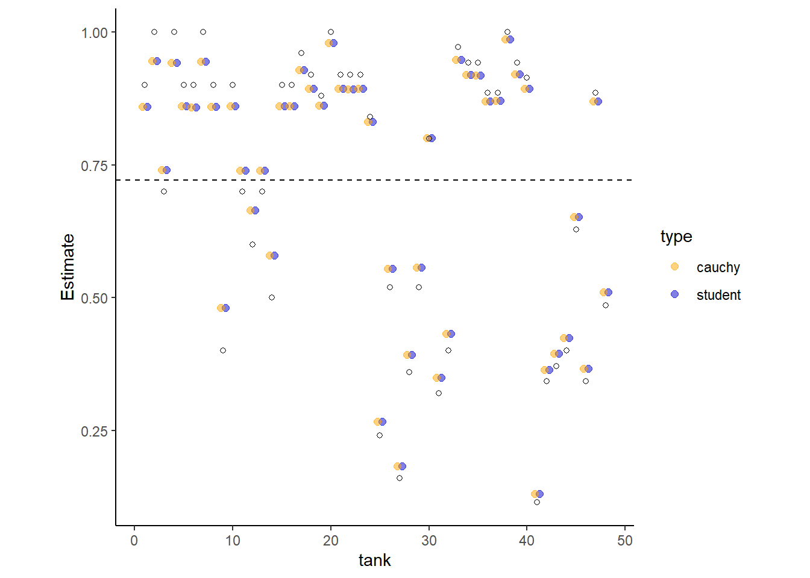
13.7.5 13M5
Modify the cross-classified chimpanzees model m13.4 so that the adaptive prior for blocks contains a parameter for its mean: \[ \gamma_i \sim Normal(\bar{\gamma}, \sigma_{\gamma})\\ \bar{\gamma} \sim Normal(0,1.5) \]
Compare this model to m13.4. What has including done?
これもbrmsパッケージでは推定ができなそうなので、ulam関数を用いる。
data(chimpanzees)
d2 <- chimpanzees
d2$treatment <- 1 + d2$prosoc_left + 2 * d2$condition
dat_list <- list(
pulled_left = d2$pulled_left,
actor = d2$actor,
block_id = d2$block,
treatment = as.integer(d2$treatment)
)
#b13M5 <- ulam(
# alist(
# pulled_left ~ dbinom(1, p),
# logit(p) <- a[actor] + g[block_id] + b[treatment],
# b[treatment] ~ dnorm(0, 0.5),
# ## adaptive priors
# a[actor] ~ dnorm(a_bar, sigma_a),
# g[block_id] ~ dnorm(g_bar, sigma_g),
# ## hyper-priors
# a_bar ~ dnorm(0, 1.5),
# g_bar ~ dnorm(0, 1.5),
# sigma_a ~ dexp(1),
# sigma_g ~ dexp(1)
#),
#data = dat_list, chains = 4, cores = 4, log_lik = TRUE
# )
b13M5 <- readRDS("output/Chapter13/b13M5.rds")それでは、b13.4と結果を比較する。
新しいモデル(b13M5)の有効サンプル数(n_eff)とGelman-Rubin統計量(Rhat)を見ると、そのサンプリングは非常に非効率的であることがわかる。元のモデル(b13.4)と比較すると、すべてのパラメータで有効サンプル数が大幅に悪化している。
これは、b13M5はオーバー・パラメータ化されているからである。actorとblockのランダム切片の平均は(ここでは、a_bar、g_bar)現在のモデルではどちらもモデルの切片の中に含まれている。そのため、これらは識別不能であり、別々に推定することはできない。
library(easystats)
model_parameters(b13.4)## Parameter | Median | 95% CI | pd | Rhat | ESS
## ----------------------------------------------------------------
## a_Intercept | 0.59 | [-0.85, 2.01] | 79.95% | 1.006 | 945.00
## b_treatment1 | -0.12 | [-0.71, 0.46] | 66.25% | 1.002 | 2476.00
## b_treatment2 | 0.40 | [-0.17, 0.98] | 91.20% | 1.001 | 2494.00
## b_treatment3 | -0.47 | [-1.07, 0.13] | 93.70% | 1.002 | 2300.00
## b_treatment4 | 0.29 | [-0.30, 0.86] | 83.83% | 1.000 | 2596.00precis(b13M5, 2, pars = c("a_bar", "b", "g_bar"))## mean sd 5.5% 94.5% n_eff Rhat4
## a_bar 0.4049342 1.1218173 -1.33440410 2.30157449 257.0455 1.010909
## b[1] -0.1430008 0.3095102 -0.61967802 0.36858667 573.5765 1.004046
## b[2] 0.3889532 0.2985868 -0.08154383 0.88374908 528.3317 1.003222
## b[3] -0.4791117 0.3108014 -0.98463977 0.01555968 492.5316 1.001266
## b[4] 0.2649693 0.3059801 -0.20340321 0.77382354 665.3800 1.002914
## g_bar 0.2384293 1.1329296 -1.56088869 2.03449592 118.2272 1.02842213.7.6 13M6
$$ \[\begin{aligned} Model \;NN: y &\sim Normal(\mu,1)\\ \mu &\sim Normal(10,1)\\ \\ Model \;NT: y &\sim Normal(\mu,1)\\ \mu &\sim Student(2,10,1)\\ \\ Model \;TN: y &\sim Student(2,\mu,1)\\ \mu &\sim Normal(10,1)\\ \\ Model \;TT: y &\sim Student(2,\mu,1)\\ \mu &\sim Student(2,10,1)\\ \\ \end{aligned}\]Sometimes the prior and the data are in conflict, because they concentrate around different regions of parameter space. What happens in these cases depends a lot upon the shape of the tails of distributions. Likewise, the tails of distributions strongly influence can outliers are shrunk or not towards mean. I want you to consider four different models to fit to one observation at \(y=0\). The models differ only in the distributions assigned to the likelihood and prior. Here are the four models:
$$
\(y=0\)の1つのデータに対する4つのモデルを比較する。
d3 <- data.frame(y=0)
b13M6_a <- brm(data = d3,
family = "gaussian",
formula = y ~ 1,
prior = c(prior(normal(10,1), class = Intercept),
prior(constant(1), class = sigma)),
backend = "cmdstanr",
file = "output/Chapter13/b13M6_a")
b13M6_b <- brm(data = d3,
family = student,
formula = y ~ 1,
prior = c(prior("constant(2)", class = "nu"),
prior("constant(1)", class = "sigma"),
prior("normal(10,1)",class= "Intercept")),
seed =13,
backend = "cmdstanr",
file = "output/Chapter13/b13M6_b")
b13M6_c <- brm(data = d3,
family = gaussian,
formula = y ~ 1,
prior = c(prior(constant(1), class = sigma),
prior(student_t(2,10,1),class=Intercept)),
seed =13,
backend = "cmdstanr",
file = "output/Chapter13/b13M6_c")
b13M6_d <- brm(data = d3,
family = student,
formula = y ~ 1,
prior = c(prior(constant(2), class = nu),
prior(constant(1), class = sigma),
prior(student_t(2,10,1),class=Intercept)),
seed =13,
backend = "cmdstanr",
file = "output/Chapter13/b13M6_d")| Estimate | Est.Error | Q2.5 | Q97.5 | |
|---|---|---|---|---|
| model NN | 5.01 | 0.70 | 3.63 | 6.41 |
| model TN | 9.68 | 0.99 | 7.81 | 11.63 |
| model NT | 0.31 | 1.00 | -1.61 | 2.27 |
| model TT | 4.44 | 4.51 | -1.66 | 11.40 |
13.7.7 13H1
In 1980, a typical Bengali woman could have 5 or more children in her lifetime. By the year 2000, a typical Bengali woman had only 2 or 3. You’re going to look at a historical set of data, when contraception was widely available but many families chose not to use it. These data reside in data(bangladesh) and come from the 1988 Bangladesh Fertility Survey. Each row is one of 1934 women. There are six variables, but you can focus on three of them for this practice problem:
- district: ID number of administrative district each woman resided in
- use.contraception: An indicator (0/1) of whether the woman was using contraception
- urban: An indicator (0/1) of whether the woman lived in a city, as opposed to living in a rural area
The first thing to do is ensure that the cluster variable, district, is a contiguous set of integers. Recall that these values will be index values inside the model. If there are gaps, you’ll have parameters for which there is no data to inform them. Worse, the model probably won’t run. Look at the unique values of the district variable:
data(bangladesh)
d4 <- bangladesh
sort(unique(d4$district))## [1] 1 2 3 4 5 6 7 8 9 10 11 12 13 14 15 16 17 18 19 20 21 22 23 24 25
## [26] 26 27 28 29 30 31 32 33 34 35 36 37 38 39 40 41 42 43 44 45 46 47 48 49 50
## [51] 51 52 53 55 56 57 58 59 60 61District 54 is absent. So district isn’t yet a good index variable, because it’s not contiguous. This is easy to fix. Just make a new variable that is contiguous. This is enough to do it:
d4$district_id <- as.integer(as.factor(d4$district))
sort(unique(d4$district_id))## [1] 1 2 3 4 5 6 7 8 9 10 11 12 13 14 15 16 17 18 19 20 21 22 23 24 25
## [26] 26 27 28 29 30 31 32 33 34 35 36 37 38 39 40 41 42 43 44 45 46 47 48 49 50
## [51] 51 52 53 54 55 56 57 58 59 60ow there are 60 values, contiguous integers 1 to 60. Now, focus on predicting use.contraception, clustered by district_id. Do not include urban just yet. Fit both (1) a traditional fixed-effects model that uses dummy variables for district and (2) a multilevel model with varying intercepts for district. Plot the predicted proportions of women in each district using contraception, for both the fixed-effects model and the varying-effects model. That is, make a plot in which district ID is on the horizontal axis and expected proportion using contraception is on the vertical. Make one plot for each model, or layer them on the same plot, as you prefer. How do the models disagree? Can you explain the pattern of disagreement? In particular, can you explain the most extreme cases of disagreement, both why they happen where they do and why the models reach different inferences?
バングラデシュの産子数に関するデータ。
- district: 女性の住んでいた地区。
- use.contraception: 避妊を行ったか否か。
data("bangladesh")
d4 <- bangladesh
glimpse(d4)## Rows: 1,934
## Columns: 6
## $ woman <int> 1, 2, 3, 4, 5, 6, 7, 8, 9, 10, 11, 12, 13, 14, 15, 1…
## $ district <int> 1, 1, 1, 1, 1, 1, 1, 1, 1, 1, 1, 1, 1, 1, 1, 1, 1, 1…
## $ use.contraception <int> 0, 0, 0, 0, 0, 0, 0, 0, 0, 0, 1, 0, 0, 0, 0, 1, 0, 1…
## $ living.children <int> 4, 1, 3, 4, 1, 1, 4, 4, 2, 4, 1, 1, 2, 4, 4, 4, 1, 4…
## $ age.centered <dbl> 18.4400, -5.5599, 1.4400, 8.4400, -13.5590, -11.5600…
## $ urban <int> 1, 1, 1, 1, 1, 1, 1, 1, 1, 1, 1, 1, 1, 1, 1, 1, 1, 1…避妊の有無が、地区によってどのくらいばらついていたのかを推定。 固定効果とランダム効果に地区名を入れたモデルをそれぞれまわす。
d4 %>%
mutate(district = factor(district)) -> d4
b13H1a <- brm(
data = d4,
family = bernoulli,
formula = use.contraception ~ 0 + district,
prior = prior(normal(0,3), class = b),
backend = "cmdstanr",
seed = 13, file = "output/Chapter13/b13H1a"
)
b13H1b <- brm(
data = d4,
family = bernoulli,
formula = use.contraception ~ 1 + (1|district),
prior = c(prior(normal(0,3), class = Intercept),
prior(exponential(1), class =sd)),
backend = "cmdstanr",
seed = 13, file = "output/Chapter13/b13H1b"
)ランダム効果モデルでは縮合が起きて、元データの平均（点線）に近づいていることが分かる。また、データ数が少ない地区（十字架が小さい地区）ほどより縮合が起きている。
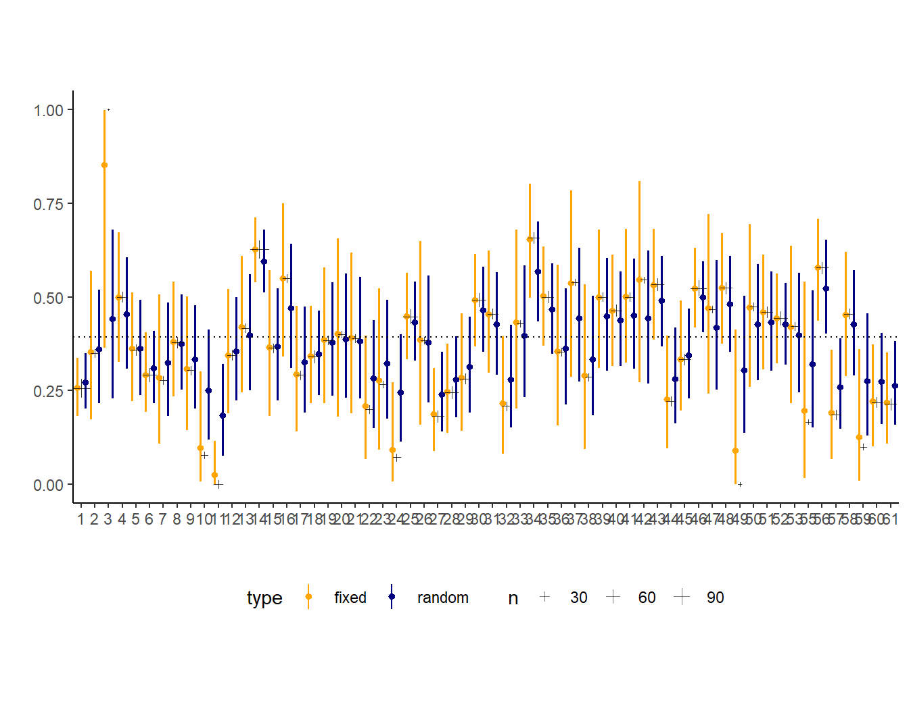
13.7.8 13H2
Return to the Trolley data, data(Trolley), from Chapter 12. Define and fit a varying intercepts model for these data. Cluster intercepts on individual participants, as indicated by the unique values in the id variable. Include action, intention, and contact as ordinary terms. Compare the varying intercepts model and a model that ignores individuals, using both WAIC and posterior predictions. What is the impact of individual variation in these data?
Chapter12でも用いたトロッコ問題のデータ(Cushman et al. 2006)を用いる。被験者のIDをランダム効果に入れる。
data(Trolley)
d5 <- Trolleyinits <- list(`Intercept[1]` = -2,
`Intercept[2]` = -1,
`Intercept[3]` = 0,
`Intercept[4]` = 1,
`Intercept[5]` = 2,
`Intercept[6]` = 2.5)
inits_list <- list(inits, inits, inits, inits)
b13H2 <-
brm(data = d5,
family = cumulative,
response ~ 1 + action + contact + intention +
intention:action + intention:contact + (1|id),
prior = c(prior(normal(0, 1.5), class = Intercept),
prior(normal(0, 0.5), class = b)),
iter = 6500, warmup = 4000, cores = 4, chains = 4,
seed = 12,
backend = "cmdstanr",
file = "output/Chapter13/b13H2")
b12.5 <- readRDS("output/Chapter12/b12.5.rds")| par | Estimate | SE | Q2.5 | Q97.5 | Estimate | SE | Q2.5 | Q97.5 |
|---|---|---|---|---|---|---|---|---|
| b_Intercept[1] | -3.73 | 0.12 | -3.96 | -3.49 | -2.64 | 0.05 | -2.74 | -2.54 |
| b_Intercept[2] | -2.78 | 0.12 | -3.01 | -2.55 | -1.94 | 0.05 | -2.04 | -1.85 |
| b_Intercept[3] | -1.97 | 0.12 | -2.20 | -1.75 | -1.35 | 0.05 | -1.44 | -1.26 |
| b_Intercept[4] | -0.47 | 0.11 | -0.70 | -0.25 | -0.31 | 0.04 | -0.4 | -0.23 |
| b_Intercept[5] | 0.58 | 0.11 | 0.35 | 0.80 | 0.36 | 0.04 | 0.27 | 0.45 |
| b_Intercept[6] | 1.99 | 0.12 | 1.76 | 2.22 | 1.26 | 0.05 | 1.17 | 1.36 |
| b_action | -0.65 | 0.06 | -0.77 | -0.55 | -0.48 | 0.05 | -0.58 | -0.37 |
| b_contact | -0.46 | 0.07 | -0.60 | -0.32 | -0.34 | 0.07 | -0.48 | -0.21 |
| b_intention | -0.39 | 0.06 | -0.51 | -0.27 | -0.29 | 0.06 | -0.41 | -0.18 |
| b_action:intention | -0.55 | 0.08 | -0.71 | -0.39 | -0.43 | 0.08 | -0.59 | -0.27 |
| b_contact:intention | -1.66 | 0.10 | -1.86 | -1.46 | -1.23 | 0.1 | -1.42 | -1.04 |
| sd_id__Intercept | 1.92 | 0.08 | 1.76 | 2.08 |
|
|
|
|
予測分布を描くと以下の通り。 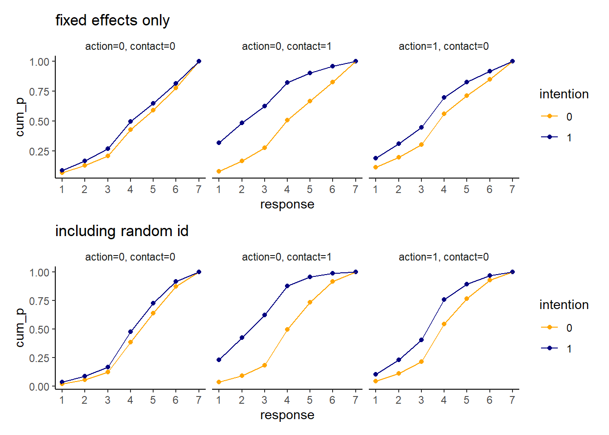
最後に、WAICを比較すると以下の通り。圧倒的にランダム効果を含んだ方がよい。
b12.5 <- add_criterion(b12.5, "waic")
b13H2 <- add_criterion(b13H2, "waic")
loo_compare(b12.5, b13H2, criterion="waic") %>%
print(simplify = FALSE) %>%
kable(booktabs = TRUE,
digits=2) %>%
kable_styling(latex_options = c("striped","hold_position"))## elpd_diff se_diff elpd_waic se_elpd_waic p_waic se_p_waic waic
## b13H2 0.0 0.0 -15528.8 89.7 356.2 4.7 31057.5
## b12.5 -2935.8 86.8 -18464.5 40.4 10.9 0.1 36929.0
## se_waic
## b13H2 179.5
## b12.5 80.7| elpd_diff | se_diff | elpd_waic | se_elpd_waic | p_waic | se_p_waic | waic | se_waic | |
|---|---|---|---|---|---|---|---|---|
| b13H2 | 0.00 | 0.0 | -15528.75 | 89.73 | 356.24 | 4.68 | 31057.50 | 179.46 |
| b12.5 | -2935.75 | 86.8 | -18464.50 | 40.37 | 10.85 | 0.06 | 36929.01 | 80.75 |
13.7.9 13H3
The Trolley data are also clustered by story, which indicates a unique narrative for each vignette. Define and fit a cross-classified varying intercepts model with both id and story. Use the same ordinary terms as in the previous problem. Compare this model to the previous models. What do you infer about the impact of different stories on responses?
先ほどのモデルに、storyもランダム効果に加える。
b13H3 <-
brm(data = d5,
family = cumulative,
response ~ 1 + action + contact + intention +
intention:action + intention:contact +
(1|id) +(1|story),
prior = c(prior(normal(0, 1.5), class = Intercept),
prior(normal(0, 0.5), class = b)),
iter = 6500, warmup = 5000, cores = 4, chains = 4,
seed = 12,
backend = "cmdstanr",
file = "output/Chapter13/b13H3")
b13H3 %>%
posterior_summary() %>%
data.frame() %>%
rownames_to_column(var = "par") %>%
filter(str_detect(par,"b_|sd")) %>%
set_names(c("par","Est_r2","SE_r2","Q2.5_r2","Q97.5_r2")) -> r_random2idのみをランダム効果に入れたモデルとの比較は以下の通り（表13.15）。少し推定値に違いが出ている。
r_random2 %>%
full_join(r_random) %>%
mutate(across(where(is.numeric), ~ round(.x,2)))-> r_full2
r_full2[is.na(r_full2)] <- "-"
r_full2 %>%
kable(booktabs = TRUE,
caption = "モデルの比較3",
digits =2,
col.names = c("par", rep(c("Estimate","SE","Q2.5","Q97.5"),2)),
align = "c") %>%
add_header_above(c("", "id + story"=4, "id only"=4)) %>%
kable_styling(latex_options = c("striped","hold_position",
"repeat_header","scale_down"))| par | Estimate | SE | Q2.5 | Q97.5 | Estimate | SE | Q2.5 | Q97.5 |
|---|---|---|---|---|---|---|---|---|
| b_Intercept[1] | -4.04 | 0.20 | -4.43 | -3.65 | -3.73 | 0.12 | -3.96 | -3.49 |
| b_Intercept[2] | -3.07 | 0.20 | -3.45 | -2.68 | -2.78 | 0.12 | -3.01 | -2.55 |
| b_Intercept[3] | -2.24 | 0.20 | -2.62 | -1.86 | -1.97 | 0.12 | -2.2 | -1.75 |
| b_Intercept[4] | -0.69 | 0.20 | -1.06 | -0.31 | -0.47 | 0.11 | -0.7 | -0.25 |
| b_Intercept[5] | 0.40 | 0.20 | 0.02 | 0.77 | 0.58 | 0.11 | 0.35 | 0.8 |
| b_Intercept[6] | 1.84 | 0.20 | 1.46 | 2.22 | 1.99 | 0.12 | 1.76 | 2.22 |
| b_action | -0.90 | 0.07 | -1.04 | -0.77 | -0.65 | 0.06 | -0.77 | -0.55 |
| b_contact | -1.09 | 0.10 | -1.28 | -0.90 | -0.46 | 0.07 | -0.6 | -0.32 |
| b_intention | -0.47 | 0.07 | -0.60 | -0.33 | -0.39 | 0.06 | -0.51 | -0.27 |
| b_action:intention | -0.52 | 0.08 | -0.69 | -0.36 | -0.55 | 0.08 | -0.71 | -0.39 |
| b_contact:intention | -1.28 | 0.11 | -1.49 | -1.06 | -1.66 | 0.1 | -1.86 | -1.46 |
| sd_id__Intercept | 1.98 | 0.08 | 1.81 | 2.15 | 1.92 | 0.08 | 1.76 | 2.08 |
| sd_story__Intercept | 0.55 | 0.14 | 0.35 | 0.89 |
|
|
|
|
WAIを比較すると以下の通り。storyもランダム効果に含んだモデルの方が少しだけ良い。
b13H3 <- add_criterion(b13H3, "waic")
loo_compare(b13H3, b13H2, criterion="waic") %>%
print(simplify = FALSE) %>%
kable(booktabs = TRUE,
digits=2) %>%
kable_styling(latex_options = c("striped","hold_position"))## elpd_diff se_diff elpd_waic se_elpd_waic p_waic se_p_waic waic
## b13H3 0.0 0.0 -15283.5 90.2 366.7 4.8 30567.0
## b13H2 -245.2 21.3 -15528.8 89.7 356.2 4.7 31057.5
## se_waic
## b13H3 180.5
## b13H2 179.5| elpd_diff | se_diff | elpd_waic | se_elpd_waic | p_waic | se_p_waic | waic | se_waic | |
|---|---|---|---|---|---|---|---|---|
| b13H3 | 0.00 | 0.00 | -15283.51 | 90.24 | 366.75 | 4.80 | 30567.03 | 180.47 |
| b13H2 | -245.24 | 21.33 | -15528.75 | 89.73 | 356.24 | 4.68 | 31057.50 | 179.46 |
13.7.10 13H4
Revisit the Reed frog survival data,
data(reedfrogs), and add thepredationandsizetreatmenr variables to the varying intercepts model. Consider models with either predictor alone, both predictors, as well as a model including their interactions. What do you infer about the causal influence of these predictor variables? Also focus on the inferred variation across tanks (th \(\sigma\) across tanks). Explain why it changes as it does across models with different predictors included.
再びreed frogデータで、predとsizeもランダム効果に入れてみる。
b13H4 <-
brm(data =dd,
family = binomial,
formula = surv|trials(density) ~ 1 + (1|tank) + (1|size)+
(1|pred),
prior = c(prior(normal(0,1.5), class = Intercept),
prior(exponential(1), class = sd)),
control = list(adapt_delta =.999),
iter = 6000, warmup=5000,
seed = 15, file = "output/Chapter13/b13H4",
backend = "cmdstanr",
)これまでのモデルと比較する（表13.16）。そこまで大きな違いはない。
b13H4 <- add_criterion(b13H4, "waic")
loo_compare(b13M1a,b13M1b,b13M1c,b13M1d, b13H4,criterion="waic") %>%
print(simplify = F) %>%
kable(digits = 2,
booktabs = TRUE,
caption = "WAICの比較2。") %>%
kable_styling(latex_options = c("striped", "hold_position"))## elpd_diff se_diff elpd_waic se_elpd_waic p_waic se_p_waic waic se_waic
## b13M1a 0.0 0.0 -99.3 4.6 19.0 2.0 198.6 9.1
## b13M1c -0.7 1.0 -100.0 4.4 19.1 1.9 199.9 8.8
## b13H4 -0.8 0.9 -100.1 4.5 19.4 2.0 200.1 9.1
## b13M1b -0.9 2.9 -100.2 3.6 21.0 0.9 200.4 7.3
## b13M1d -1.0 1.7 -100.2 4.8 19.3 2.2 200.5 9.6| elpd_diff | se_diff | elpd_waic | se_elpd_waic | p_waic | se_p_waic | waic | se_waic | |
|---|---|---|---|---|---|---|---|---|
| b13M1a | 0.00 | 0.00 | -99.28 | 4.55 | 19.03 | 1.96 | 198.55 | 9.11 |
| b13M1c | -0.69 | 0.96 | -99.96 | 4.41 | 19.12 | 1.89 | 199.92 | 8.83 |
| b13H4 | -0.78 | 0.85 | -100.05 | 4.53 | 19.40 | 1.97 | 200.11 | 9.07 |
| b13M1b | -0.94 | 2.89 | -100.22 | 3.63 | 21.02 | 0.86 | 200.43 | 7.27 |
| b13M1d | -0.97 | 1.68 | -100.24 | 4.82 | 19.34 | 2.15 | 200.49 | 9.65 |
交互作用も含むモデルと事後分布を比較すると以下の通り。すべてではないが、全部ランダム効果に入れたモデルの方がより縮合が起きている？
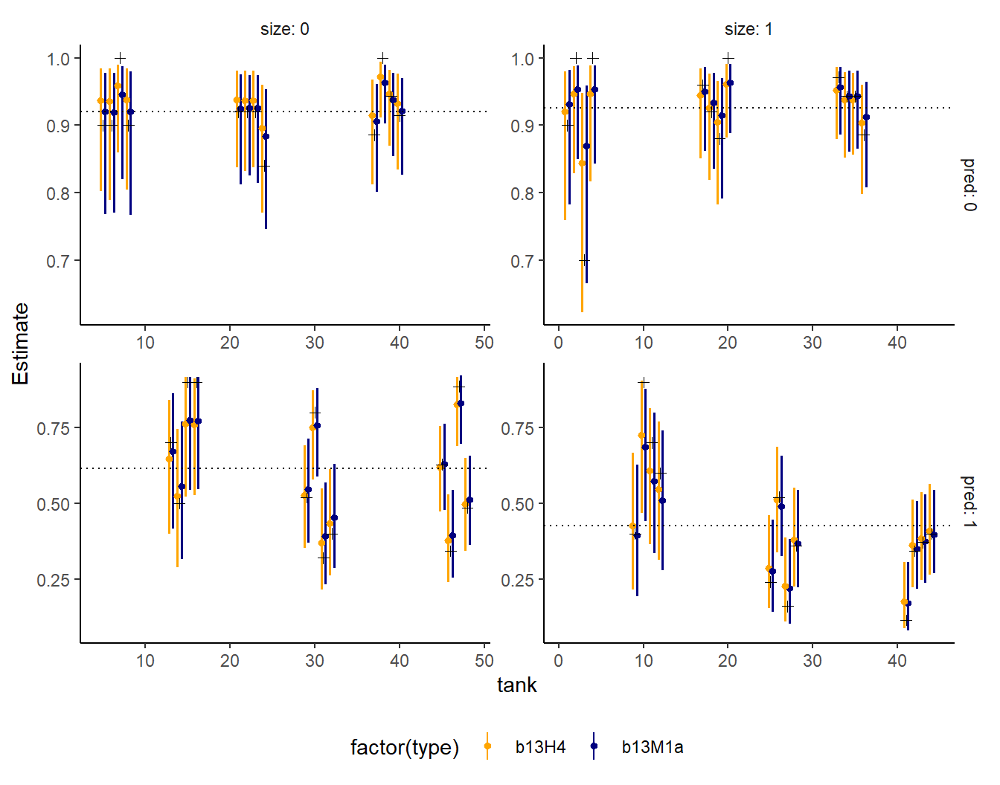
ランダム効果tankの標準偏差の推定値はほとんど変わらない。
posterior_summary(b13H4) %>%
data.frame() %>%
rownames_to_column(var = "par") %>%
filter(str_detect(par,"sd")) %>%
kable(booktabs =TRUE,
digits =2) %>%
kable_styling(latex_options = c("hold_position", "striped"))| par | Estimate | Est.Error | Q2.5 | Q97.5 |
|---|---|---|---|---|
| sd_pred__Intercept | 1.74 | 0.82 | 0.70 | 3.77 |
| sd_size__Intercept | 0.64 | 0.62 | 0.03 | 2.28 |
| sd_tank__Intercept | 0.79 | 0.15 | 0.52 | 1.11 |
posterior_summary(b13M1d) %>%
data.frame() %>%
rownames_to_column(var = "par") %>%
filter(str_detect(par,"sd")) %>%
kable(booktabs =TRUE,
digits =2) %>%
kable_styling(latex_options = c("hold_position", "striped"))| par | Estimate | Est.Error | Q2.5 | Q97.5 |
|---|---|---|---|---|
| sd_tank__a_Intercept | 0.74 | 0.14 | 0.49 | 1.05 |